The PCC provided two basic ways to display information: open wall displays and projected visual aids. The open wall displays were used to portray information that was updated and changed on a cyclical, day-today, or new-problem basis. Most of the display charts were constructed so that they could be moved in and out of position on horizontal tracks. They were marked by coded symbols so the viewer could tell at a glance if a project was lagging, ahead of schedule, or on schedule. Both the project offices and the staff-functional offices submitted data and maintained liaison with PCC personnel throughout the preparation and use of the display charts, and the offices were responsible for having proper attendance in meetings where their display material was to be discussed.
Each display carried the name of the individual responsible for the data. If the project office representative could not answer questions or supply additional information, the person to contact was immediately identifiable from the chart, and a quick phone call could make him—or the information—available during the meeting. Some charts concerned items being covered by what MSFC called the problem resolution system. The data indicated the criticality of the problem, the specific hardware or operation involved, the originator of the data, the identity of the "action manager," and the current status of the problem. Other charts showed aspects such as costs and technical data (weight, performance, and configuration management).
Rudolph always insisted on having a name associated with the charts. He wanted to work with a person, he said, not an anonymous office. Backing up the charts was a comprehensive set of "management matrices" in notebooks, listing all individual counterparts, by name, for all

MSFC's Saturn V Program Office operated out of this Program Control Center, rimmed with recessed, sliding status charts and double picture screens for comprehensive, up-to-the-minute briefing on progress and problems in the far-flung program.
major systems and subsystems of the hardware. The matrix pages included MSFC counterparts for Industrial Operations and R&DO, other centers, and the contractors. To find out why a valve did not work, the Saturn V Program Office could call each person responsible for the project, and not waste time calling the wrong office or waiting for an office manager to decide who could provide a competent response to a specific query. 57 Rudolph wanted a fast and accurate response to problems, and he usually got it.
For a long time, the rear of the PCC was dominated by a huge PERT chart (Performance, Evaluation, and Reporting Technique). PERT was a sophisticated and complex computerized system, with inputs beginning, literally, at the tool bench. Technicians on the floors of contractor plants around the country monitored the progress of nearly all the hardware items and translated the work into computer cards and tapes. Data for costs and schedules were also entered into the system. The PERT network was broken down into 800 major entities, and summarized 90 000 key events taking place around the country. PERT helped provide
MANAGING SATURN
the answers. If a gas generator exhaust line under test in California was showing problems, how would this affect the static test schedule at the Mississippi Test Facility (MTF), and a scheduled launch from Cape Kennedy? What would be its cost impact? How would it affect other hardware? What would be done about it? 58
Like the PCC network, PERT received a strong impetus in the Polaris program in the mid-1950s. 59 During the early phases of the Saturn program, MSFC management regarded PERT as a very successful effort. At a NASA Management Advisory Committee conference in 1964, von Braun said that PERT was the best source of information available on the status of hardware programs. The PERT network did not catch everything; for example, a parts problem on Boeing's S-IC-T (test stage) had been missed. Still, MSFC managers in 1973 recalled PERT as one of the most useful management systems, although the PERT network was phased out about the time of the launch of the first Saturn vehicle (AS-501) in the winter of 1967. One reason was that PERT was tremendously expensive. A large number of people within NASA and from the contractor's special computer programs were needed to make the network perform adequately. "It has some use as a preliminary planning tool," said R. G. Smith, a Rudolph successor, "but when tens of thousands of events per stage are used, it is difficult to analyze, usually lagging in real time usefulness, and subject to manipulation to avoid exposure of real problems." 6
During launch operations and special activities, the PCC was linked to KSC and Houston by closed-circuit television. Although conferences in the PCC were not televised by closed circuit (because of space limitations and technical problems), the communications arrangement permitted discussions in the PCC to be heard instantaneously at NASA Headquarters and other centers. The ceiling of the PCC room was studded with extrasensitive microphones, so that anyone at the conference table in Huntsville could interject a comment or respond without leaving his seat, and nobody had to wait until a speaker somewhere else had finished. When a speaker in Huntsville was making a presentation, conferees in Houston or Cape Kennedy could freely respond. In addition, conferees visually followed the presentation at other locations by means of viewgraphs supplied beforehand by the speaker. The viewgraphs were transmitted by Long Distance Xerox (LDX) system on a leased telephone circuit. Using standard typewriter-size sheets, the LDX line transmitted high-fidelity copies at the rate of about two copies per minute. After receipt at the other end, personnel used them to reproduce the numbered viewgraphs, shown in sequence as requested by the speaker. The fast response of the LDX system permitted up-to-the-minute documentation, and if there was not time to prepare new viewgraphs, conferees at the other locations could be supplied with regular Xerox copies instead. The ability to exchange such material meant that informed decisions could be made
STAGES TO SATURN
while the meeting was in progress. Rudolph insisted on detailed viewgraphs, in words as well as diagrams, so that the viewgraphs could serve as minutes of the PCC conferences. 61
SATURN MANAGEMENT: A MATTER OF "STYLE"
The Saturn V program, and the vehicle itself, was enormously complex. Counting everything from nuts, bolts, and washers to transistors and circuit boards, the Saturn V booster alone had something like 3 000 000 parts (in addition, the command and service modules had 2 000 000 parts; the lunar module 1 000 OOO). 62 Manufacture of the rocket stages involved thousands of contractors and the expenditure of millions of dollars per week. The scope and cost of the effort raised the obvious question: how did NASA do the job? and, more specifically, how did MSFC keep tabs on a multimillion-piece monster? Another question was: is it possible to point to a unique style of management in the lunar landing program?
James Webb, NASA Administrator from 1961 to 1968, warned that in large-scale endeavors such as the Apollo-Saturn program, managers needed to be especially flexible because many "unpredictable difficulties" as well as many "unanticipated opportunities" would crop up. Many traditional management concepts were not applicable because the large-scale R&D endeavor was so dynamic. Managers needed to have a sound foundation in basic management principles, but also needed to be able to work in an environment where the lines of communication crisscrossed and moved in unusual directions, and where the job was not always exactly defined in the beginning. The successful manager had to do more than understand the organizational framework backward and forward. He had to grasp the total dimensions of the effort and define his role in the task. In this context, successful aerospace managers availed themselves of existing fundamentals of management, whatever their source of origin, and raised them to a higher degree of refinement in complex activities involving high technology. 63 One sophisticated observer characterized NASA's managerial contributions:
To accomplish the moon landing within the time set by President Kennedy, Apollo's designers deliberately hewed to techniques that did not reach far beyond the state-of-the-art in the early Sixties. The really significant fallout from the strains, traumas, and endless experimentation of Project Apollo has been of a sociological rather than a technological nature: techniques for directing the massed endeavors of scores of thousands of minds in a close-knit, mutually enhancive combination of government, university, and private industry.
Apollo has spawned an intimate and potentially significant new sociology involving government and industry, an approach that appears to stand somewhere between the old arsenal concept favored by the Army and Navy and the newer Air
MANAGING SATURN
Force concept that depends heavily upon private corporations to manage, develop, and build big systems. The NASA approach combines certain advantages of each, while enhancing the total abilities of both private and government organizations. 64
In the Saturn program, successful management style was a blend of the decades of experience of the original von Braun team in Germany and management concepts from the Army, Navy, Air Force, other government agencies, and private industry. As the early SSO began to elaborate its relationships with prime contractors. Air Force concepts of configuration management became more conspicuous. During the evolution of the Saturn program at MSFC, the Army's arsenal concept was inherent in the R&DO arrangement, although its premier role was altered as a result of 1963 reorganization. Both the Army and the Air Force contributed key managers.
The Air Force influence was pervasive, from the Headquarters level on down. George Mueller, Associate Administrator for Manned Space Flight, came from private industry (Space Technology Laboratories), but he had worked with several Air Force missile programs, including Atlas, Thor, Titan, and Minuteman. His deputy for the Apollo-Saturn program, Brigadier General Samuel C. Phillips (USAF), brought skills in configuration management and logistics management that had been acquired during the Minuteman effort. At MSFC, Robert Young, the first IO director, had executive experience with an industrial contractor (Aerojet) that also had been involved in Air Force missile programs. Young was succeeded by General Edmund F. O'Connor (USAF). The influx of other Air Force officers in 1964 has already been noted. On the other hand, numerous Army officers left ABMA to join MSFC, including Lee James, who served at one time as the Saturn I-IB Program Manager, worked at NASA Headquarters, and later was head of the IO division. James replaced General O'Connor, who had returned to the Air Force. From NASA Headquarters, Mueller's GEM Boxes constituted a significant managerial technique in the Apollo-Saturn program, and MSFC elaborated upon its own concepts of working groups, management matrices, and (borrowing a bit from the Polaris program) the Program Control Center. 65
From his vantage point as an active manager in the Army and NASA and as an observer of Air Force management, Lee James paid special tribute to the R&DO laboratories that he believed gave MSFC "unusual depth." The laboratories were one of the outstanding aspects of MSFC management under von Braun. "It's hard to make them work in the government," James said. "That is a unique attribute." 66 Although von Braun emphasized the overriding authority of the program and project offices in their relationships with the laboratories, contacts were not always unruffled. During a session with Headquarters executives in 1964, both Rees and von Braun agreed, "The project manager is definitely in
STAGES TO SATURN
the driver's seat on project management matters. R&DO provides technical knowledge in depth to solve the technical problems, but at the same time carefully avoiding any interference with contract management. The stage manager is the sole contact with the contractor." Reading the minutes of the meeting a few days later, one of the top managers in the Saturn V Program Office expressed his frustrations in an astringent comment scribbled in the margin: "Wouldn't it be good if this were so! Top mgt. needs to say so in a policy statement and then enforce it." 63 The situation festered for several months, until von Braun issued a detailed directive to the heads of both Industrial Operations and R&DO, in which the authority of Industrial Operations (and the Saturn V Program Office) was asserted in explicit terms. 69
Although it is difficult to document the specifics, relationships between Industrial Operations and R&DO were often uneasy. As recalled by an observer from within the Saturn V Program Office, one form of managerial assertion was out-and-out harassment. A stage manager might call up a laboratory chief in R&DO and complain about the lack of activity or lack of cooperation from the counterpart personnel in the laboratories. Other methods included pointed reminders about directives from the program manager's office, a claim to be acting at the behest of the program manager, the use of technical knowledge that others would hesitate to contradict, and outright exposure of deficiencies. 70
The same techniques were also applied within the Saturn V Program Office, as the staff-functional managers (the GEM Boxes) jousted with the stage managers. It must be remembered that Rudolph considered his functional managers to have as much authority as his stage managers. This approach was unique to the Saturn V Program Office; other program offices tended to allow the hardware managers greater authority. Rudolph's arrangement was deemed necessary, however, to maintain vertical control over the stage elements of the Saturn V, especially since the stage managers were sometimes considered to manifest a parochial attitude about their own activities. 71 The role of the functional managers was spelled out in a program element plan document: 72
Establishment of managers for functional areas is an important management concept used in the Saturn V Program. These functional areas, e.g. Program Control, Systems Engineering, Test, may be considered as "vertical slices" of the vehicle which result in stages, or "hardware" items. The functional managers are responsible for planning, coordinating and directing their areas, insuring that a single thread of effort is carried from the highest level of Apollo management in Washington through the Center level and into the prime contractors.
The Saturn management concept consistently put a premium on visibility, epitomized by the Program Control Center in the Saturn V Program Office. Webb, who prided himself in the development and exercise of managerial expertise, was amazed by its conceptual format
MANAGING SATURN
and versatility. During a visit to MSFC in 1965, not long after the activation of the PCC, Webb was given a thorough briefing on the facility by Rudolph and Bill Sneed, who was head of the Program Control Office at the time. Following the briefing, Webb addressed a select group of MSFC personnel, and was obviously enthusiastic about the PCC concept. "I saw here in the hour before you arrived," he exclaimed to his audience, "one of the most sophisticated forms of organized human effort that I have ever seen anywhere." 73 Webb's remark was a special compliment to Huntsville's PCC; Huntsville later became the model for NASA's Apollo Program Office in Washington as well as for other centers and prime contractors. Over a period of years, at Webb's behest, a stream of executives from government and American and foreign industry trouped through the PCC. The Saturn V Program Office also received inquiries by telephone and letter from a wide spectrum of sources, including the famed design group of Raymond Loewy and Associates. A former member of the Polaris management team once visited the PCC and came away thoroughly impressed. "This chart room of yours is an amazing place," he said to Rudolph. "I used to think the ones we had in the Polaris program were good, but this puts us to shame." 74
The Marshall center's organization experienced several adjustments after 1969 in response to new directions in NASA programs. By 1972, the IO segments operated as individual program offices and reported directly to the head of the center. The R&DO laboratories were set up as the Directorate of Science and Engineering, along with several other directorate organizations. Under the new scheme, the Saturn Program Office contained all the various stage and engine offices for the Saturn IB and Saturn V, and also included the PCC. Many of the individuals associated with the original Saturn V Program Office took new positions involving Skylab, the Space Shuttle, and other projects. Following the Apollo-Soyuz Test Project in August 1975, NASA planned no more launches of the Saturn class of vehicles, and the Saturn Program Office was finally dissolved.
SUMMARY
MSFC management strongly reflected the tradition of the "dirty hands" approach begun by the von Braun team at Peenemuende and continued during the operations at ABMA. The organizational structure and influence of the technical laboratories was another vestige of rocketry work from the pre-World-War-II era. The pronounced shift toward managerial functions after the 1963 NASA-MSFC reorganization enhanced the prestige of Marshall's Industrial Operations component, and the influence of Air Force concepts of missile management was
STAGES TO SATURN
evident in the extended tenure of General Edmund F. O'Connor as its head.
The crux of Saturn V management was Arthur Rudolph's Saturn V Program Office. Rudolph's missile management skills had been enhanced by the Redstone and Pershing programs; as a Peenemuende veteran, he could also relate effectively to von Braun and other key MSFC managers of similar backgrounds. Within Rudolph's organization, the "GEM Boxes" provided an effective and crucial link to offices at NASA Headquarters and developed and applied various management systems serving Marshall and the contractor; the Program Control Center provided the means for visibility and accountability in the Saturn program.
It is impossible to pinpoint any single outstanding or unique management concept that led the program to success. The NASA-MSFC "style" seems to be more of an amalgam of various concepts, although these concepts were refined for the unique scope and complexity of the Saturn program. In general, the government-industry partnership was notably successful, and the in-house capability at MSFC was highly effective in monitoring contractor performance and providing backup skills and facilities. The organization and operation exhibited by the Program Control Center lent a theme of "visibility" to the Saturn program. Among the many managerial tasks, logistics was a major effort.
The Logistics Tangle
Lunar flights were critically dependent on the "launch window," when trajectories of the orbiting moon and the space vehicle were compatible. Crucial slippages in preparation time were avoided during the final weeks prior to launch so that liftoff occurred during the "launch window." Schedules and deadlines extended back to the production process of rockets and their complementary equipment—a process that was nationwide and exceedingly complex. Components from thousands of contractors and subcontractors not only had to be completed on time, but all components had to arrive on schedule at one of the major centers so that units could be assembled and thoroughly checked out. The units were then shipped to Cape Kennedy for stacking on the flight vehicle. The Saturn V required 56 railroad tank cars to supply its necessary propellants. The various stages for one launch vehicle spent up to 70 days in transit at sea before arriving at Cape Kennedy, while the S-IVB and the instrument unit arrived as airborne cargoes. In the background were over 20 000 contractors and subcontractors who supplied hundreds of thousands of individual parts for the Saturn V. In 1966, Arthur Rudolph, speaking as the Director of MSFC's Saturn V Program Office, commented succinctly, "Not the least of the problems in the Saturn V system is logistics." 1
Wernher von Braun, Rudolph's superior at Huntsville, pointed out two special reasons for emphasizing logistics. First, the costs of logistics might run to as much as one third of the entire launch vehicle program's budget. Any improvement, he stressed, saved money fast. Furthermore, von Braun said, logistics seemed to be taken for granted too often, and this led to troubles. By 1966, the Saturn launch vehicles had been
STAGES TO SATURN
launched successfully 13 times, and good logistics was an important factor in this record of success. Still, there were occasional logistical tangles, and "there have been some awfully close calls," von Braun warned. Although the term logistics could be applied to many functions such as financial analysis and procurement, the word as used during the Saturn program applied to activities in direct support of hardware development, testing, and mission operations. This task included spares provisioning, inventory management, maintenance and maintainability, training and technical support documentation, transportation, the supply of propellants and pressurants, and the management, coordination, and evaluation of the entire process. 2
THE ORIGINS OF SATURN LOGISTICS
In retrospect, the need for a logistical program seems logical and obvious, but it was slow to develop; the lack of such a program hampered the Saturn program for several years. When Congress passed the Space Act in 1958, the U.S. manned space program relied primarily on rocket vehicles derived from the nation's military ballistic missile programs. Despite their internal complexities, the Mercury and Gemini spacecraft were manageable under existing conditions, and the Air Force provided the requisite support functions for the launch vehicles and related logistical phases. The Apollo program changed the ground rules, because NASA intended to supply its own launch vehicles, but lack of time and money stalled the implementation of a logistical setup for the Saturn launch vehicle program. 3 In the early phases of Saturn program planning, many officials felt that there was no need for military-style "launch vehicle system logistics" based on rocket weapons because NASA did not have the problems of large numbers of rockets and dispersed launch sites. Lamentably, this seemed to lead to a second assumption: since a weapon logistical system seemed inappropriate for NASA, a consensus evolved that there was no need for a logistical program at all. 4 This weakness in reasoning stemmed partially from differences in the nature of the launch vehicles. NASA planned to launch a limited number of vehicles at fixed intervals and from one point, contrasted with a theoretical military situation where many launches occurred at unscheduled times from widely scattered launch sites or field positions. In a national defense situation, numbers of missiles and unanticipated circumstances required an elaborate logistical backup. Troops in the field were essentially unschooled as engineers and relied on a logistical array of technical manuals, parts, spares, and rigidly scheduled maintenance. Saturn personnel, on the other hand, included a high percentage of engineers. They did not have to rely on military procedures but could refer immediately to engineering drawings and work out an appropriate "fix"
THE LOGISTICS TANGLE
on the spot, supported by conveniently accessible laboratories and machine shops at the launch site. 5
The hopeful assumptions about the launch vehicles did not suffice. Factors that required logistical management included the size and complexity of vehicles, the wide geographic dispersal of launch and test sites, the pace of the program, the armies of technicians involved, and the number of suppliers around the country. "Misinterpretation then, caused neglect of an integrated logistics program," Rudolph admitted. "Thus we ... created for ourselves a considerable problem by not allowing enough thought and planning toward logistics at the very outset." Theoretically, once administrators pinpointed a basic weakness in the Saturn program managerial structure, it should have been fairly economical to borrow some techniques of weapon logistics and adapt them to NASA's requirements. Comprehensive programs existed for the Min-uteman and Pershing programs, but the logistics for an older, smaller rocket did not always prove adequate for a newer, lar.ger one. As Rudolph observed, "I am not at all sure that logistic support of a launch vehicle program with its high rate of advancement in the state of technology and its associated highly complex ground support equipment is not more difficult than logistic support of a weapons system."
Further difficulties emerged as NASA management moved belatedly to establish an adequate logistical program. As problem areas became identified, additional funds to resolve the problems simply did not exist. When systems analyses indicated badly needed changes in logistics, the program manager had to take some sort of corrective action with existing funds. It came to making tradeoffs; the program manager, began to rob Peter to pay Paul and sometimes found himself in a dilemma. As Rudolph phrased it, "how much of a calculated risk can he afford to take"? In 1961-1962, Saturn V managers from MSFC and personnel from the Apollo Program Office at NASA Headquarters initiated a series of "intensive, accelerated studies" to bring the logistical picture into focus. Essentially, the goal was to update the logistical organization to fit the prevailing status of vehicle development and the availability of funds. "This agonizing reappraisal lasted over many months," Rudolph recalled, "but in this way, we were able to tailor tightly, I repeat, tailor our logistical program to meet the essential requirement of each stage, yet stay within budget limitations." 6
Unsnarling the logistical tangle within the existing budget included the reeducation of the program managers and program personnel throughout the organization. Brigadier General Edmund F. O'Connor, Director of Industrial Operations at Marshall, emphasized the general lack of attention to logistics and misunderstandings about it in the early years. He believed that no visibility existed. "In other words," O'Connor continued, "we were having the same kind of trouble with logistics that we had with documentation, reliability, and the like. We had a serious
STAGES TO SATURN
communications problem, no logistics baseline, no logistics thread running through the entire program." 7
The outcome of this reevaluation was a formally organized logistical program that would keep logistical requirements up to date and that would hopefully avoid future problems. As the new plans emerged, NASA managers realized that the logistical programs of the contractors were also unclear. No one knew if contractor progress had achieved desired goals or if problems existed. Under the new regimen, Saturn V contractors began formulating logistical progress reports, and all developments were plotted against logistical control charts. In addition, each of the hardware managers acquired a logistical manager, a move that reflected the increasing concern and attention to the problem. Rudolph installed an overall logistical manager in his office to keep tabs on the lower echelons and the contractors, as well as on the MSFC laboratories in Huntsville. 8
NASA's logistical management finally crystallized by 1963. Much of the push to reorganize the logistical format came from Stan Smolensky of NASA Headquarters and from Eberhard Rees, Deputy Director— Technical, in von Braun's office at MSFC. At the top of the logistical organization, NASA set up a Logistics Management Office at the staff level in the Office of Manned Space Flight (OMSF) in Washington. This new office reported directly to the Apollo Program Manager at OMSF and integrated the overall Apollo-Saturn support programs. For the Saturn launch vehicles themselves, MSFC organized a Project Logistics Office which reported to the Director of Industrial Operations. This office functioned both at a staff level and in an operational capacity, and acted in close cooperation with the respective program managers within the Saturn program as well as with the R&D laboratories at Marshall. The R&D laboratories had the technical responsibility for the development of much of the launch vehicle's systems and supporting hardware. For example, the Test Laboratory did considerable investigation of the special purpose vehicles, and the Astrionics Laboratory designated an individual to cooperate on work involving the instrument unit. Because many parts and components were being produced by the factories and the vehicles were taking shape, the project logistics office had to decide whether to repurchase or switch parts if a manufacturer decided to close down a particular operation or start up a different product line. This kind of situation meant that Marshall's personnel who were involved in the quality and reliability aspects also became part of the logistical organization. With the Project Logistics Office in operation in Huntsville, Houston's MSC relied on MSFC's growing capability for moving the command module, service module, and other large bits and pieces of spacecraft hardware around the country. As for logistical requirements emanating from the launch site in Florida, John C. Goodrum, head of
THE LOGISTICS TANGLE
MSFC's Project Logistics Office, remarked that "Kennedy always considered themselves a logistics-oriented center," with internal administrative channels to handle the job, although Marshall occasionally provided transportation for KSC. 9
The cooperative aspects of the logistical program included the Department of Defense, which supplied some of the propellants and pressurants for the Saturn program. Some cryogenic production plants were jointly operated under the auspices of the Department of Defense and NASA, and MSFC monitored the specifications and construction of other plants around the country. By 1965, the major plants were in operation to supply cryogenics for the rising tempo of Saturn testing and launch operations. This capability was especially important for liquid hydrogen (LH 2 ). The space program helped raise the production levels to 190 metric tons per day, with the Saturn program absorbing up to 95 percent of the nation's total capacity. Once a plant became operative, NASA and MSFC were eager to coordinate its production with an active test and flight series, because increased LH 2 consumption was a way to save money. Producers established a price for their product that was in direct relation to the volume sold. In the early 1960s, liquid hydrogen was about $20.00 per kilogram, but the price dropped to around $2.20 per kilogram for 450 kilograms, 45 to 65 cents per kilogram for 2250 kilograms, and leveled off at around 35 cents per kilogram for higher volumes. Fortunately, MSFC "never got pinned" to the $20.00 curve, Goodrum remarked, but the space agency paid some fairly high prices for liquid hydrogen from time to time. For transportation of assorted cryogenics, MSFC relied on fleets of trucks, mostly from commercial carriers; the Air Force lent occasional support. 10
By 1966, Rudolph felt that the logistical problem had been controlled, and he confidently announced that the first Saturn V launch, early in 1967, would get off on schedule early in the coming year. The success in coping with the logistics of the launch cannot be underestimated. A comparison of PERT figures indicated a total of 40 000 events for the contractors working on the three stages and the instrument unit. For the ground support equipment (GSE) managers, over 60 000 events needed to be tracked. The components for ground support were manufactured throughout the United States and arrived at test sites and KSC by every conceivable means of modern transportation. Rudolph remarked that it was virtually impossible to illustrate graphically the full GSE logistical program and harder still to describe it. 11
The GSE delivery requirements had many parallels in the transport logistical requirements for the various rocket stages of the Saturn program. The development of this phase of Saturn logistics also involved a transportation network from coast to coast and relied on a wide spectrum of transport equipment.
STAGES TO SATURN
TRANSPORTERS: THE ROLL-ON/ROLL-OFF CONCEPT
Because the Saturn vehicles were originally designed for the utmost in vehicle integrity and manned missions, it would be inadvisable to degrade the integrity of Saturn components by using inferior transport modes and techniques. Rocket stages were transported thousands of miles and experienced hundreds of hours of constant vibration. There was always the possibility of damage to welded joints and seals, as well as to delicate components that were manufactured to very high tolerances. On arrival at Cape Kennedy, additional checkout tests frequently exposed a problem that could be traced to the transportation sequence. The logistics of rocket stages were not to be taken lightly. 12
As early as 1959, personnel at ABMA began to study the problems of transporting boosters from the manufacturing area to the test stands and the problem of the long journey from Huntsville to the Atlantic Missile Test Range in Florida. Early proposals considered using existing transporters devised for Redstone and Jupiter missiles, but this equipment proved to be too small. To carry the larger Saturn series on Redstone-Jupiter transporters, investigators discovered they would have to disassemble and remove engines and associated equipment, then replace the engines each time the complete vehicle moved from manufacturing to testing areas. This process was repeated during shipment to the launch site. Engineers warned that such frequent reassembling would compromise the reliability of the vehicle.
As a second proposal, planners envisioned a gargantuan BARC-style amphibious vessel. The acronym came from Army nomenclature for an amphibious machine in military inventory at the time: Barge, Amphibious, Resupply, Cargo. The Army used BARCs for over-the-shore delivery of heavy tanks and other cargo, and this apparently served as the inspiration for an enormous BARC to transport Saturn rockets. This unit would pick up a Saturn vehicle at the manufacturing area, carry the vehicle to the test site and reload it after tests, and then the BARC would lumber overland and plunge into the Tennessee River. After cruising down the Tennessee and the Mississippi rivers, the ponderous BARC would churn through the Gulf of Mexico, clamber onto the Florida coast at Cape Kennedy, and move directly to the launching pads. The BARC concept was eventually scrapped. The shallow draft raised doubts about its seaworthiness in the Gulf, and its dimensions and difficult maneuverability would necessitate major modifications to existing buildings and manufacturing areas to accommodate the transporter alone. The engineers concluded that it would cost $5 000 000 and would not be operational for four years. The ABMA study recommended the construction of towable transporters for the Saturn vehicles and planned to use proven, seaworthy vessels on the waterborne leg of operations.
THE LOGISTICS TANGLE
In October 1959, the Advanced Research Projects Agency (ARPA) gave the go-ahead to the Army Ordnance Missile Command (AOMC) to begin engineering studies on the Tennessee River for dock facilities that would be conveniently accessible to the manufacturing complex at Redstone Arsenal. By December, AOMC received further authorization from ARPA not only to construct the docks but also to begin designs for a barge to carry the oversize boosters to the launch site at Cape Canaveral. The engineers decided to equip the dock areas with electrical winches for a roll-on/roll-off operation that would use the ground transporter to wheel the stage aboard the barge, ride with it to its destination, and wheel it out again. This operation promised the least strain and damage to the stage during the strenuous handling and transportation phases. 13
The size of the Saturn I first-stage boosters promised some headaches when the time came to move completed stages around the manufacturing areas and between the ships and the static-firing areas of Redstone Arsenal. The Saturn engineers in Huntsville devised a solution to the problem. For the final assembly of the Saturn I first stage, workers used a pair of huge circular assembly jigs to position the cluster of one center tank and eight smaller tanks around it. These assembly fixtures at either end of the rocket then became the load-bearing structures for transportation. After the completed booster was raised with huge jacks, wheel and axle assemblies were positioned at each end. With the stage lowered onto these assemblies, they were affixed to the assembly jigs, which now became support cradles for towing the stage. The wheel assemblies, using aircraft tires, were designed for independent braking and hydraulic steering. The transporter was towed by an army truck tractor at five to eight kilometers per hour through successive phases of checkout and test. NASA also used the transporter for loading and unloading the stage from the barges that carried it from Huntsville to the launch site on Florida's east coast. 14
For the S-IC first stage of the Saturn V, MSFC's Test Laboratory designed a similar transporter in 1963. The S-IC transporter used a modular wheel concept, based on a two-wheel, steerable unit and clustered to comprise two dollies fore and aft—a total of 24 wheels. The wheels, similar to the 24-ply tires for earth-moving equipment, stood about as high as a man. Each modular pair of wheels incorporated a separate system for power steering, with all systems of a particular dolly interconnected by a computer to correlate the steering angles for all wheels in unison. Since the dolly units could be steered to ±90° from the axis of the transporter, the entire rig and its load could be maneuvered sideways, into, and out of checkout bays and test areas. MSFC used a modified Army M-26 tank retriever as the tractor unit for towing the S-IC and its huge transporter. The M-26, a 179-kilowatt (240-horsepower) model weighing 55 metric tons, included 27 metric tons of water ballast
STAGES TO SATURN
to cope with the counterweight of the transporter. The total length of the tractor and transporter unit came to about two-thirds the length of a football field and was capable of rolling along at eight kilometers per hour. In theory, the driver in the tank retriever's cab was in charge of the direction of travel, but in practice, he acted as a coordinator of a crew of other drivers and transporter personnel. When the S-IC transporter rig "hit the road," its entourage included a cluster of observers who walked along at each corner of the vehicle and alerted the driver coordinator positioned in the front of obstacles and clearances that were blocked from his view. The driver in turn relayed instructions to drivers on the transporter who were riding in cabs front and rear and who could manipulate the massive fore and aft dollies as required. Before taking on an actual stage, the entire crew trained throughout the MSFC complex on a tubular S-IC simulator that was built to the dimensions and weight of the actual stage. 15
The size of the stages aboard the transporters and the combined loads they represented created some unique problems in hauling them across country. At Huntsville, highway engineers laid out a special roadway stretching 13 kilometers down to the docks on the Tennessee River. At Michoud, another Saturn roadway included the length of an old airstrip that lay between the manufacturing complex and the docking area for the barges. In California, where the Douglas and North American contractor plants were situated in urban areas, the state cooperated in granting special permits for the use of public highways for moving the S-II, S-IV, and S-IVB stages. These stages, though smaller than the S-IC, nevertheless presented special difficulties. Douglas, the
The first S-IC flight stage is cautiously towed through Marshall Space Flight Center on its way to the adjoining Tennessee River and its barge transportation.
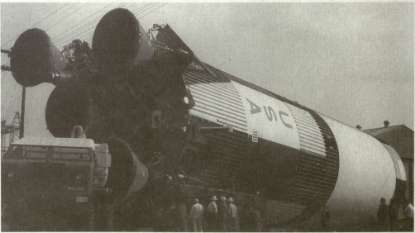
THE LOGISTICS TANGLE
manufacturer of the S-IV and S-IVB stages for the Saturn I and Saturn IB, became the first major West Coast contractor to encounter such inconveniences. As the S-IV second stage of the Saturn I began to take shape in 1960, transport problems became pressing. A Douglas executive, H. L. Lambert, said that the problems of handling and transporting Saturn S-IV stages had reached the point where such considerations threatened to impose limits as a design factor. 16
Each stage followed distinctive logistical patterns. After manufacture in California, the S-II traveled to the Mississippi Test Facility (MTF). The S-IC stage, manufactured at nearby Michoud, was also tested at MTF. Both stages, for all their prodigious bulk, could be transported with comparative ease via seagoing barges that used the extensive river and canal systems constructed around the Michoud and MTF facilities. After testing, barges once more carried the S-IC and S-II stages (and earlier S-I and S-IB vehicles) to Cape Kennedy. Logistical patterns for the S-IV and S-IVB were more complex. S-IVB was smaller than its companions and presented some unique handling difficulties in moving it through an especially congested area of Los Angeles to the shipping facilities. Difficulties were also encountered in loading the stages for a barge trip and delivering the stages further north and even further inland to the Douglas test facilities at Sacramento.
Customized apparatus for handling and transportation of the S-IV and IVB stages was paralleled by "customizing" the eventual routes to test and reshipment facilities. Although logic compelled logistics engineers to opt for canals and seaborne transportation instead of land transport, the overland mode still had to be used. The overland mode was the only way to move a stage from the manufacturing areas to the loading docks for the canal and seaborne segments of its journey. Douglas and NASA personnel in California began negotiations to move a 27 000-kilogram load on roads, subject to the various jurisdictions of state, county, and city. The planning and coordination took days. Fortunately, cooperation of local law enforcement organizations expedited the task, and flagmen from railroads in the area agreed to special duty when the stage and its accompanying entourage approached railroad crossings. Commercial firms that operated vans and various truck equipment, as well as local school districts with extensive bus schedules were called into consultation on the logistics of overland rockets. Because the rocket stage spread across all available lane space and the shoulders of the road, no parking space remained. Vehicles waited at roadside until the stage transporter moved by. Regular auto traffic could be rerouted, but bus lines and cartage business on normal schedules had to reroute their trips more carefully. The stage and transporter spread up as well as out, so utility companies agreed to raise (or even bury) their lines when no practical alternative routes seemed feasible. All other encumbrances along the right of way were eliminated
STAGES TO SATURN
along the final route. Finally, Douglas had the responsibility to coordinate the remaining myriad travel arrangements. NASA representatives cooperated with various military personnel on sea transport, while all three elements (Douglas, NASA, and the military) kept in touch on times of arrival and departure, interior schedules, proper support equipment to load and unload the cargo, and additional problems.
Inevitably, complications arose. Early in the S-IV program, a stage enroute from Huntington Beach to Santa Monica for transfer to a barge collided with one of nature's denizens. H. E. Bauer, then a senior S-IV manager with Douglas, easily recalled the novel circumstances. It happened early in the morning, with the loaded transporter creeping at 6.4 kilometers per hour. "At that speed nothing much should happen," Bauer reminisced, "but, incredible as it may sound, we did run over a very mature and ripe skunk." By a stroke of luck, the stage itself escaped unscathed, but the transporter remained a large, odoriferous problem—"we had a 23 1 /2 ft. wide, 46 1 / 2 ft. long, 22 000 Ib. skunk on our hands." With other missions pending for the one-of-a-kind transporter, the Douglas Aircraft Company chemists who devised an effective deodorizer ranked high on the list of unsung heroes of the Saturn program. 17
Ground transport of North American's S-II stage, manufactured at Seal Beach, proved to be less difficult. The Seal Beach complex was only a few kilometers from the Navy's harbor at the Seal Beach Naval Weapons Station, and a broad, four-lane highway facilitated movement of the S-II from the manufacturing area to the docks, although all local traffic had to be stopped during the operation. 18
The S-IV, S-IVB, S-IC, and S-II stages acquired miscellaneous customized accessories for logistical operations, including access kits. The size of the S-IC permitted a much more elaborate panoply of tiered and balconied work platforms, installed inside and out. The S-II access equipment resembled that of the S-IV and S-IVB, a work platform which moved up and down an internal tunnel inserted through the center of both the oxidizer and fuel tanks. Movement, shipment, and accessories for the Saturn's engines relied on more conventional means. Early in the 1960s, after preliminary static tests at Edwards Air Force Base in California, F-l engines were flown to Huntsville by the U.S. Air Force Military Air Transport Service aboard C-133B cargo planes. Beginning in 1967, the engines arrived at Michoud by truck from California, although MSFC occasionally arranged to deliver the engines by boat. 19
NASA'S "NAVAL FLEET" FOR THE SPACE PROGRAM
Marshall Space Flight Center began its first important waterborne work with the Palaemon, a converted Navy barge. The vessel was about 79 meters long, with two deck levels. The Navy used the Large
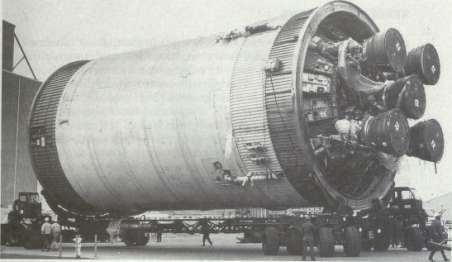
An S-II stage on its transporter.
Covered Lighter (YFNB) class during World War II, primarily during the Pacific campaigns, as floating supply and maintenance centers for forward operational areas. The vessels were originally designed to be self-contained. The lower decks were divided into crew quarters, galley, machine shop, and a machine room for a pair of diesel generators to supply power. The NASA conversion essentially retained the lower deck configuration, but the top deck was removed and covered over to house the Saturn I first stage as it rested on its transporter. The structure was "beefed up" at some points, and reinforcement strips on the floor helped carry the weight of the cargo. At the forward section, the Palaemon included a different berthing arrangement for a 10—12 man crew on the upper and lower deck levels, and included the radio shack and pilot house.
To propel the barges, MSFC's Project Logistics Office relied on commercial marine contractors like the Mechling Barge Lines, Incorporated, of Joliet, Illinois. One of Mechling's tugs, the Bob Fuqua, played an especially significant role in the Saturn program, beginning with the Palaemon and the shipment of the first of the Saturn I first stages from Huntsville to Cape Canaveral. Normally, river tugboats like the Bob Fuqua pushed, rather than pulled, a string of barges. With the tug in the rear, it was easier to maneuver the barges ahead and to drop off or pick up a barge at river docks. The high pilot house on the tug made it easy to see over the string of low, broad-beamed barges and follow the channel. The Palaemon, however, featured a high, metal-canopied superstructure for the protection of Saturn stages, reminiscent of a military quonset hut set atop the barge. Because the tug captain and pilot could not see to
STAGES TO SATURN
guide the barge, the Palaemon ?> pilot house, not the tugboat's, became the bridge for controlling the barge and tugboat while under way, although the tug continued to supply power from the rear. In emergencies, control reverted back to the tug. This remote-control procedure, unique in barging operations, was ironed out in early 1961, based on water trials on the Tennessee River using the Bob Fuqua and the Palaemon with a test booster aboard. Barge captains and pilots had to relearn control techniques and maneuvers from the forward pilot house on the barge.
The Bob Fuqua possessed other advantages. It was also a seagoing tug, and the Mechling organization operated it under seaway rights that permitted the tugboat to move the Palaemon directly from port to port—from the Tennessee docks, down the Mississippi, across the Gulf, and up the Atlantic Coast to the launch site at Cape Canaveral. After leaving the Mississippi, the barge and tug followed the Gulf Intracoastal Waterway to St. George Sound, located off the Florida panhandle; across the Gulf of Mexico to San Carlos Bay (near Ft. Myers); through the Okeechobee Waterway across Florida to Stuart, on the Atlantic Coast; then up the Florida Intracoastal Waterway to the Cape Canaveral Barge Canal. The complete voyage from Huntsville covered about 3500 kilometers and took 10 days; by using the Intracoastal Waterway, the barge and its cargo traveled only 452 kilometers in open seas, and the route kept them no more than 80 kilometers from sheltered ports along the Gulf Coast. The barge and tug entourage usually included a 12-man complement: a five-man crew from Mechling to handle the barge and tug, a half-dozen NASA personnel traveling with the stage, and one government monitor with overall responsibility for the operations. The leisurely pace of the cruise, with the amenities of a well-equipped galley, showers, and air-conditioned quarters, often attracted upper-echelon MSFC personnel, if they could find a good excuse to go along. 20
The inaugural voyage of the Palaemon occurred in April 1961 when it departed from Huntsville for Cape Canaveral. Its cargo included a dummy S-IV stage for the SA-1 vehicle and a huge water-ballasted tank that simulated the size and weight of the Saturn S-l first-stage booster. Crews at MSFC and the Cape rehearsed movements for loading, unloading, maneuvering the stage and its transporter, operating the barge. The Palaemon made the return trip in May, in time for its first operational cruise, carrying a dummy S-IV payload along with the first SA-1 flight stage that had just completed static-firing tests and final checkout at Huntsville. But on 2 June 1961, the single lock at Wheeler Dam on the Tennessee River collapsed. All river traffic halted and the Palaemon and its intended cargo were trapped upstream. The launch schedules were endangered, and NASA and MSFC scrambled to find a way to get the stage to Florida. The high national priority rating of the Saturn program and the cargo operations of the Atomic Energy Commission at Oak Ridge, Tennessee spurred prompt action. It did not take long for the
THE LOGISTICS TANGLE
TVA to build roads around the collapsed lock to a point below Muscle Shoals, Alabama. But the Saturn stage still needed a barge to carry it.
The Marshall center got in touch with the Navy, and requested another suitable YFNB barge. The Navy found one in the "mothball fleet" at Pensacola and MSFC personnel went to work on its modifications. It was appropriately christened Compromise. The cargo aboard the Palaemon finally left the MSFC docks on 5 August 1961; workers unloaded the cargo at Wheeler Dam and towed the Saturn SA-1 booster and S-IV dummy stage around the locks, reloaded the booster and dummy stage aboard the Compromise, and reached the Cape on 15 August, meeting the 10-day delivery schedule. NASA pressed a different tug into service, using a tow line, and the Compromise carried its load exposed; the tight schedule did not allow time to fit the barge with the distinctive metal canopy or controls of the Palaemon. Before the end of the year, Compromise was rebuilt to more suitable specifications, complete with protective canopy and a newly outfitted pilot house in front. Prior to the reopening of the Wheeler lock in the spring of 1962, NASA authorities decided that the original sobriquet for the Compromise did not convey the proper image. The barge was recommissioned the Promise? 1
For transportation of the S-IV and S-IVB from the West Coast to Huntsville and then to the Cape, NASA at first relied on ocean freighters. The larger S-II stage needed more specialized treatment, since its size did not allow it to be stored within the confines of a freighter's hold or above deck. In December 1963, NASA concluded agreements with the Military Sea Transport Service to use the Point Barrow for shipment of S-II stages from California to test and launch sites in Mississippi and Florida. The Point Barrow was a Navy LSD (Landing Ship, Dock) that had seen extensive Arctic duty before its conversion for the space program. Beginning in 1964, the Point Barrow carried some S-IVB stages as well as the larger S-II under a protective canopy located in the rear of the ship.
The other large vessels that operated for the Saturn program included the U.S.N.S. Taurus and the YFNB barge Poseidon. The Taurus, similar to the Point Barrow, carried S-IVB and S-II stages to Mississippi test locations and to Kennedy Space Center, and the Poseidon was an oversized barge built to carry the big S-IC first-stage boosters of the Saturn V between MTF, MSFC, and Cape Kennedy. The open-deck barges Little Lake and Pearl River shuttled S-IC stages directly from the factory doors at Michoud to the test stands at MTF. The barges were left uncovered because the stages were hoisted directly off the barges into position at the vertical test stands. Because neither barge had a forward pilot house, the tugs that moved them featured a second bridge perched on a framework tower rising above the original pilot house on the tug. The rig looked like a seagoing forest fire watchtower to most spectators. The remainder of MSFC's fleet was on the West Coast for S-IV and S-IVB logistics. In addition, a small flotilla of seven tanker barges was
Saturn's Barges
An S-IB stage is loaded aboard the barge Palaemon at Mi-choud.
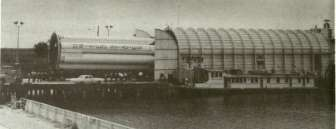
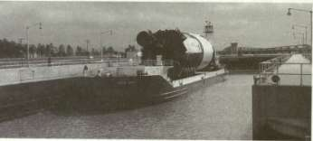
This fleet of six liquid-oxygen barges carried liquid oxygen from a nearby oxygen production plant to the Mississippi Test Facility. Three similar barges carried liquid hydrogen.
An S-IC stage is aboard th barge Pearl River at the Mil sissippi Test Facility. The hig auxiliary bridge at the rear c the barge was constructed fc use by the tug Apollo in seein over the cumbersome bulk of th S-IC.
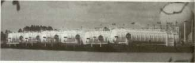
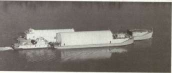
This flotilla of three barges being pushed up the Tennesst River early in 1965. The loadt ones carried first and secon stages of the Saturn IB dynam test vehicle.
The barge Poseidon ferried S-IC and S-II stages between MSFC, Michoud, Mississippi Test Facility, and KSC.
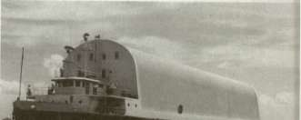
THE LOGISTICS TANGLE
stationed at MTF. These barges were designed to carry a 875 000-liter tank of liquid hydrogen and moved between New Orleans and MTF to support the S-II and S-IVB static test firings. 22
William Mrazek, a top official in MSFC's Industrial Operations Division, once remarked that the Apollo program was possibly the greatest engineering program in history, overshadowing the Manhattan Project that produced the atomic bombs of World War II and outranking the efforts of the builders of the Egyptian pyramids. 23 He could have added that the Apollo project depended on the existence of other massive American enterprises in engineering such as the Panama Canal and the river navigation system managed by the Tennessee Valley Authority.
After tests at Sacramento, S-IVB stages were sometimes carried by barge and freighter either directly to the Atlantic Missile Range (by way of the Panama Canal and the Gulf of Mexico), or indirectly to MSFC—a 14-day voyage up the Mississippi, Ohio, and Tennessee rivers to Huntsville for testing, and back out again. Rifle fire raised a potential hazard for the Saturn rocket stages on the Mississippi and its tributaries. MSFC and contractor authorities began to worry that the huge targets on the barges might attract young boys and their small-bore rifles. Marshall asked for a Coast Guard escort for some of the first trips, not only as protection from adolescent sharpshooters, but also from riverbank moonshiners. John Goodrum, head of MSFC's logistics office, said that he didn't remember that a barge was ever hit, but somebody once put a bullet hole in the pilot house. "That's very common on the Mississippi," Goodrum laughed. The natives were pretty good shots, and no one ever got hurt—they just decided to let you know that they were there. 24
Full-sized stages for the Saturn I, Saturn IB, and Saturn V continued to move up and down the Mississippi and Tennessee rivers in the Palaemon, Promise, or Poseidon, aided by the specially rigged Bob Fuqua. Occasionally, some of the components of one of the stages had to be carried back and forth between Michoud and Huntsville for additional tests and analysis at MSFC, and these components could be lashed down as a deck load on one of the regular commercial barges that plied the rivers. Components for the S-IC stage took the water route to MSFC for testing; one cargo consisted of the 10-meter diameter intertank assembly at 6650 kilograms and 2 "Y ring" supports, 10 meters in diameter and over 6800 kilograms apiece. The average voyage of 1996 kilometers from New Orleans docks to the MSFC docks in Huntsville involved several segments and changeovers as the barge string was passed from one towboat to another. The first segment ran 1396 kilometers upriver to Cairo, Illinois, and took 10 days. At Cairo, the "rocket barge" joined a barge group under the control of an Ohio River towboat for the 76-kilometer leg to Paducah, Kentucky, the outlet of the Tennessee
STAGES TO SATURN
River. The Igert Towing Company's Bill Dyer acquired control of the barge at Paducah and began the 521-kilometer run to Huntsville.
On the Tennessee River, the massive, federally supported Apollo-Saturn project took advantage of a predecessor: the Tennessee Valley Authority project. Nine multipurpose locks and dams created a navigation channel from Paducah to Knoxville, Tennessee, a span of 1014 kilometers. At an average depth of 3 meters, the river channel was quite comfortable for river barge operations. For the Bill Dyer, the first lock to lift the towboat and barge occurred just 35 kilometers from Paducah. Then followed a placid, 322-kilometer cruise at about 14 kilometers per hour as the river turned south across the western end of Tennessee, past a series of small river landings with whimsical names like Sarah's Garter and Petticoat Riffle. At Pickwick Dam, near the border of Alabama, the-barge group was lifted again and turned east toward Huntsville. En route were additional locks at Wilson Dam and Wheeler Dam, elevating the Bill Dyer and its cargo a total of 77 meters within 407 kilometers of river channel. About 8 hours after emerging from the Wheeler locks the Bill Dyer put in at the MSEC boat slip, and the 521-kilometer journey on the Tennessee was completed. 25
SPACECRAFT BY AIRCRAFT: NASA's AIR CARGO SERVICE
Helicopters were occasionally pressed into service to meet logistical needs for the Apollo-Saturn program. In support of vehicle dynamic tests at Huntsville, an Army CH-47A, dangling its cargo underneath, flew from Tulsa, Oklahoma, to Huntsville. The Saturn IB load consisted of an adapter unit that connected the instrument unit to the service module and housed the lunar module. The tapered adapter component, 9 meters long and 6.7 meters in diameter at the base, made quite an impression as it swayed through the air during the 965-kilometer flight from North American's facility at Tulsa. 26 The most impressive aerial deliveries were made by special transport aircraft that were designed to carry entire Saturn S-IV and S-IVB upper stages.
As the Saturn I program progressed, NASA officials became increasingly concerned about coordinating arrival of separate stages at the Cape to meet the launch schedules. Lower stages for the Saturn I and Saturn IB required a comparatively short voyage from Huntsville and from Michoud. Delivery of the S-IV and S-IVB from California also involved the use of seagoing barges and transports to carry these upper stages down the Pacific Coast, through the Panama Canal, across the Gulf of Mexico, and finally across Florida to Cape Canaveral. The odyssey of the S-IV and IVB stages required occasional side trips up the Mississippi and Tennessee rivers to Huntsville for additional tests at MSFC facilities before returning to the Cape. This complex and slow operation and the
THE LOGISTICS TANGLE
potential delays from foul weather at sea generated increasing concern about meeting carefully coordinated deliveries of vehicle stages and related hardware. Transportation of the larger S-II second stage of the Saturn V and the S-IVB third stage from California to the Cape multiplied the concern. Another potential weak link was the Panama Canal. If the canal were to be shut down for some reason, seaborne shipments would be forced around South America and the carefully calculated launch schedules would collapse. 27
Against this background, managers within NASA began thinking about other modes of transportation to ensure rapid delivery of upper Saturn stages, beginning with the S-IV. The size of the S-IV ruled out delivery to the Cape by rail or road. As the lead center of launch vehicle development, MSFC let a contract in 1960 to the Douglas Aircraft Corporation to determine the feasibility of air transport. A Douglas assessment team spent several months on the project and came up with a proposal that envisioned a "piggyback" concept that used an Air Force C-133 transport. Design studies included pictures of the rocket stage positioned above the C-133 and perched atop streamlined fairings. Because the stage was exposed to the passing airstream, planners expected to fit the stage with a streamlined nose cone, with vertical stabilizers at the rear to enhance its aerodynamic qualities in transit. Suggestions from other sources ran the gamut from airplanes to gliders to lighter-than-air vehicles. One proposal envisioned the use of a blimp, which would putter along from California to Florida with a swaying S-IV stage slung underneath. As late as 1963 serious thought was given to resurrecting a modern successor to the prewar dirigible, with an interior cargo hold to carry rocket stages. 28
The Douglas organization already possessed its own reservoir of experience in the transportation of rockets by aircraft. The Douglas Thor IRBM had been freighted regularly on transcontinental and intercontinental flights by Douglas C-124 Globemasters, and the company was confident that this mode of transport was practical because its own aerial operations had not damaged any rocket or its systems. The Thor, however, had been designed for airborne shipment, 29 and the situation was now reversed. Douglas was ready to listen when approached with an unusual scheme: the modification of an existing aircraft to completely enclose the rocket stage with an airplane's fuselage.
The idea of a bloated cargo airplane originated with an imaginative group associated with John M. Conroy, aerial entrepreneur of an outfit aptly named Aero Spacelines, Incorporated, in Van Nuys, California. Aero Spacelines intended to acquire surplus Boeing B-377 Stratocruisers. About 1960, Conroy and some partners acquired title to over a dozen four-engined airliners, used mainly by Pan Am and Northwest Orient on their intercontinental routes during the Stratocruiser's heyday in the 1950s. The Conroy group at first planned to use the planes for
STAGES TO SATURN
nonscheduled air carry operations, but airlift for Air Force rockets also looked promising. By 1961, plans had progressed to fly NASA's new family of large launch vehicles. 30
Drawing heavily on his own financial resources, Conroy pushed the idea of his bulbous, "volumetric" airplane despite the considered opinion of many aircraft engineers and aerodynamicists that no plane could be distorted and distended enough to swallow an S-IV rocket stage and still be able to fly. But Conroy was persuasive. R. W. Prentice, who managed the S-IV logistics program at Douglas, remembered him as real "swashbuckler," the sort of aviation character that reminded him of the cartoon hero named "Smilin'Jack." Conroy apparently found some kindred souls among influential Douglas executives, because he persuaded the company to go along with him on a presentation to NASA and MSFC. Some of the NASA managers were unconvinced, but the energetic Conroy touched a responsive chord in MSFC's visionary director, Dr. Wernher von Braun. As John Goodrum, chief of MSFC's logistics office, recalled the sequence of events, von Braun warmed to the idea from the start. The idea was innovative and its boldness appealed to him. Neither MSFC nor NASA Headquarters could allocate substantial funds to such a project at the time. Nevertheless, buoyed by the interest evinced at both Douglas and MSFC, Conroy decided to plunge ahead, although there was no guarantee of a contract. 31
The first phase of the project called for lengthening the fuselage (by inserting the cabin section of another Stratocruiser) to accommodate the S-IV stage. After the flight test of that modification, phase two called for the enlargement of the plane's cabin section to approximately double its normal volume. The swollen, humpbacked addition to the original Boeing airframe was originally fabricated as a nonstructural element stuck on the top of the fuselage. This alteration allowed test pilots and engineers to conduct flight tests and analyze the altered flying characteristics in comparative safety. The first flight occurred on 19 September 1962, followed by more than 50 hours of cross-country trials and other experimental flights. Satisfied that the reconfigured aircraft could indeed fly, workmen finally cut away the original inner fuselage and the massive external shell was mated to the basic airframe as a load-bearing structure. The name Aero Spacelines selected for its unique plane was a natural. The former Stratocruiser became a B-377 PG: the Pregnant Guppy. The new plane had cost over $1 000 000. 32
The Guppy's designers intended to make the plane a self-contained cargo transportation system. The fuselage separated just aft of the wing's trailing edge to load and unload the S-IV and other cargoes. The ground crew unloaded and attached three portable dollies to the rear part of the plane and disengaged the various lines, cables, and bolts connecting the fuselage sections. The rear portion was then rolled back to expose the plane's cavernous hold. 33
THE LOGISTICS TANGLE
In the course of work on the Guppy, Conroy began running out of cash and credit. He figured he needed some tangible support from NASA in the form of an endorsement to keep his creditors at arm's length. On 20 September 1962, only one day after the first air trials of the reconfigured prototype cargo version, Conroy and an adventuresome flight crew took off for a demonstration tour. At this stage of the plane's development, the B-377's original fuselage was still intact, and the massive hump attached to the outside was held up by an interior framework of metal stringers and wooden two-by-fours. Conroy had to get a special clearance from the Federal Aviation Administration which allowed him to proceed eastward from Van Nuys, as long as he avoided major population areas en route. Following several interim stops, the Pregnant Guppy flew to Huntsville, where Conroy wanted to demonstrate the plane to MSFC officials and perhaps get some form of unofficial encouragement to enable him to continue the plane's development.
He landed at the airstrip of the Army's Redstone Arsenal, a facility shared jointly by MSFC and the Army. The Guppy was visited by a mixed group of scoffers and enthusiasts, including von Braun. While some onlookers made sour jokes about the reputed ability of the awkward-looking plane to fly Saturn rocket stages from the Pacific to the Atlantic coast, von Braun was delighted. With both time and money in short supply, Conroy wanted to pull off a convincing test of the Guppy's ability to fly a heavy load. Because there was no time to install enough sandbags in the hold to simulate the proposed cargo capacity, the plane was completely gassed up with a load of aviation fuel to make up the weight difference. MSFC's logistics chief, John Goodrum, observed the proceedings, and most of the people around him seemed very doubtful of the plane's potential. "In fact," remembered Goodrum, "there were some pretty high ranking people who stood right there and shook their heads and said it just wouldn't fly—there is no way!"
With Conroy at the controls, the big plane lumbered down the runway and into the air. The pair of MSFC observers aboard this first flight included Julian Hamilton, a key manager in Saturn logistics programs, and Herman Kroeger, a member of the von Braun group since the V-2 program in Germany and a former test pilot. Even with the number one and two engines out, the plane could maintain course and altitude with only light control. This feat so impressed ex-test pilot Kroeger that he lapsed into German in describing it to his colleagues after the plane landed. Von Braun was so interested that he wanted to fly in the airplane. The MSFC director crawled in the airplane and took off, to the consternation of those still dubious about the airworthiness of the fuel-heavy airplane braced on the inside by a wooden framework. The flight was uneventful, and informal contract talks began the same day. There was little doubt that Conroy needed some firm support. His
finances were in such bad shape that he reached Huntsville only by borrowing some aviation gas from a friend in Oklahoma, and MSFC agreed to supply him with enough gas to fly home to California. 34
Conroy was able to supply information for more serious contract negotiations by late fall of 1962. Conroy reported in a letter to von Braun that performance of the Pregnant Guppy guaranteed cruising speed in excess of 378 kilometers per hour. The correspondence also revealed the growing extent of MSFC cooperation and support for the proposed Guppy operations involving cooperation from military bases, although no official contracts had been signed. Aero Spacelines planned to keep critical spares at strategic locations along its route structure to reduce downtime in case of malfunctions. This arrangement included the special allocation of a "quick-engine-change" unit at Patrick AFB, Florida, near the launching sites of Cape Canaveral. NASA also planned to arrange for Aero Spacelines to purchase supplies of fuel and oil at the military bases along the Guppy's route. 35
In the spring of 1963, the space agency was planning the first two-stage launch of the Saturn I vehicle, designated SA-5. The first four launches had carried inert second stages, and SA-5 had special significance as the first of the giant Saturn boosters to have both stages "live" and operational. The agency was growing anxious over the delivery of the S-IV-5 stage because of a time slippage caused by test problems, and the Pregnant Guppy would save considerable time by flying the stage from California to the Cape in 18 hours, as opposed to 18-21 days via ship. In a letter dated 25 April 1963, NASA's Director of Manned Space Flight, D. Brainerd Holmes, emphasized the Guppy's importance to Associate Administrator Robert Seamans. Holmes wanted to make sure that the FAA was "advised of NASA's vital interest" in securing the Pregnant Guppy's prompt certification so that lost time could be made up in the delivery of the S-IV-5 stage. Holmes pointed out that NASA had also made several telephone calls to FAA officials. 36
As evidence of NASA's growing commitment to Guppy operations, Aero Spacelines was finally awarded a contract from MSFC, to cover the period from 28 May—31 July 1963, to complete the plane's tests and make an evaluation as soon as possible. The FAA awarded the B-377 PG an airworthiness certificate on 10 July, and MSFC immediately conducted a transcontinental trial flight with a simulated S-IV stage aboard. Although the Pregnant Guppy did not receive its final certification as a transport craft until 13 November 1963, NASA relied on the plane to carry Apollo spacecraft hardware to Houston during the late summer months, and in mid-September the Pregnant Guppy took on the S-IV-5 stage at Sacramento for delivery to Cape Kennedy for the launch of SA-5. Technical problems in the first stage delayed the launch for many weeks, but the two-stage rocket finally made a successful flight on 29 January 1964. 37
THE LOGISTICS TANGLE
The Guppy saved up to three weeks in transit time and effected substantial savings in transportation costs, and won endorsements and long-term contracts from NASA officials. The plane was operated by MSFC but carried a variety of NASA freight including launch vehicles for the Gemini program, Apollo command and service modules, hardware for the Pegasus meteoroid detection satellite, F-l engines, the instrument unit for Saturn I, and "other general outsized NASA cargo." 3
For these reasons, as well as NASA's concern for the larger space hardware in the Saturn IB and V programs, NASA managers expressed interest in correspondingly larger aircraft. Because the S-IVB stage was larger than the S-IV, it would require a larger plane if air operations were to be continued. A larger plane could carry the instrument unit for both the Saturn IB and the Saturn V as well as the Apollo lunar module adapter unit. Moreover, a second plane could serve as a backup for the original Guppy. At one point in the discussions about a second-generation aircraft, serious consideration was given to the conversion of an air transport large enough to handle the S-II second stage of the Saturn V.
Even before the Pregnant Guppy had won its first NASA contract, Conroy was writing to von Braun about a successor aircraft equipped with powerful turboprop engines and large enough to transport the S-IVB. NASA did not seriously consider the second-generation Guppy until the original Pregnant Guppy had demonstrated its worth. Robert Freitag, NASA Headquarters' Director, Manned Space Flight Center Development, wrote von Braun in early 1964 noting the "outstanding success we have enjoyed with the Pregnant Guppy." In addition to the Pregnant Guppy's use by MSFC to carry rocket stages, Freitag said the Manned Spacecraft Center in Houston was anxious about having a backup aircraft available. Freitag envisioned three possibilities: acquire a similar Pregnant Guppy and rely on water transport for the S-IVB and S-II stages, acquire a larger type for S-IVB operations and leave the S-II to water transport, and acquire an S-II-size aircraft that could also handle the smaller S-IVB. Any of the three possibilities could meet the logistical requirements of the Houston center, but a decision was needed soon; the timing for production and delivery of Saturn rocket stages to the Cape to meet launch schedules was in question. "Since time is of the essence," Freitag concluded, "I would appreciate receiving your recommendations including advantages and technical funding plan for accomplishing our objectives at the earliest possible date." 3
Evidence suggests that MSFC gave serious thought to a mammoth aircraft capable of handling a rocket stage the size of the S-II. On 2 February 1964, MSFC drafted a request for quotation titled "Large Booster Carrier Aircraft." The document suggested the development of either an airplane or a lighter-than-air vehicle capable of transporting the
STAGES TO SATURN
S-II (or S-IVB) to test sites in southern Mississippi and the Cape. "In any case, the program is to be characterized by austere funding and early delivery schedules." Several companies proposed various schemes, including the use of modified B-36 bombers or English-built Saunders-Roe Princess flying boats. 40 None of these plans ever materialized. NASA concluded that an S-II cargo aircraft would take too long to develop and would cost too much. Also the number of planned Saturn V launches was revised downward, reducing the requirements for S-II transportation. The S-IVB, however, was programmed for frequent launches in both the Saturn IB and Saturn V class of vehicles, so the desire for a backup airplane persisted. 41 With its Boeing Stratocruiser inventory, Aero Spacelines proved to be ahead of any competition in supplying a second volumetric air transport.
As before, Aero Spacelines developed the new aircraft with its own resources, although personnel from MSFC came to California to cooperate on the design studies, and a flight-test expert from NASA's Flight Research Center at Edwards, California, worked very closely with the design team. Originally dubbed the B-377 (VPG) for "Very Pregnant Guppy," the second-generation plane finally emerged as the "Super Guppy," or B-377 SG. The larger, heavier cargoes for the Super Guppy required increased horsepower. Although parts of three other B-377 aircraft were incorporated into the Super Guppy, the cockpit, forward fuselage and wing sections, and the engines came from a Boeing C-97J, an Air Force transport version of the commercial Stratocruiser. This aircraft had Pratt & Whitney turboprop engines. Conroy realized that it was imperative for his big new airplane to have the more efficient and powerful turboprop powerplants. Conroy had learned from his contacts in the Air Force that the C-97J airplanes were headed for retirement, and he had hoped to get the airframes as salvage and the engines on a low-priced lease. Conroy succeeded, with NASA lending special assistance in securing the engines. During the spring of 1965, NASA's Office of the Administrator made overtures to the Air Force: "We definitely feel that it would be in the public interest and advantageous to the government if these engines were made available" to transport rocket stages, engines, and other large cargoes. "Under these circumstances," NASA explained, "we would appreciate it if you would approve the proposed lease." 42 Conroy got his engines, and the Super Guppy began acceptance tests before the year was out.
NASA wanted to put the aircraft in service early in 1966, after the plane had proved its flying capabilities, although final FAA certification came later in the spring. John C. Goodrum, chief of MSFC's Project Logistics Office, felt that the utility of the Super Guppy was of such importance that it should be considered operational for "critical cargoes" on a "limited basis" as soon as possible. Although FAA examiners had not yet flown the Super Guppy by March, Goodrum urged operational
THE LOGISTICS TANGLE
service based on the judgment of NASA's own test pilots at Edwards that the plane was satisfactory for transport duties. He advised NASA Headquarters that MSFC planned "immediate utilization" of the airplane to ship a Saturn instrument unit manufactured by IBM in Huntsville. The Super Guppy landed at Huntsville within a week, apparently by special arrangement with the FAA, and flew the IU to the Douglas plant at Huntington Beach for systems testing with an S-IVB stage. The plane made a return trip before the end of the month and delivered another S-IVB test stage to MSFC. 43
As the Super Guppy became fully operational during 1966, its success reflected the expertise accumulated in missions using its predecessor. The Super Guppy's cargo was loaded from the front, and the entire forward section of the fuselage was built to swing aside on hinges just ahead of the wing's leading edge. This modification added to the ease and swiftness of its operations, and was largely dependent on the ground support techniques and equipment developed for the Pregnant Guppy in the early 1960s. After modification, equipment designed for the S-IV served equally well for the larger S-IVB. The cargo lift trailer (CLT) became a major item in the support equipment developed for handling space hardware as air cargo. The CLT was developed at MSFC and operated on the scissor-lift principle to raise its load for transfer into the cargo hold of the airplane. The CLT could also be used as a transporter over short distances. A movable pallet supported the S-IV on the CLT. The pallet had cradle supports fore and aft that were linked to the pallet with shock mounts of an oil-spring type. The CLT raised the pallet to the loading level of the cargo bay, then the pallet was rolled off and secured inside the aircraft. For aerial shipment, ground crews did not use the shroud that protected the rocket stage during water transport. Instead, engineers designed lightweight covers to fit over the exposed areas fore and aft, and a bank of static desiccators in the propellant tanks comprised the environmental control system while airborne. Both Guppy aircraft carried the instrumentation to monitor pressure, humidity, temperature, and vibration readings in flight as part of the plane's permanent equipment. In a typical delivery sequence, the rocket stage moved eight kilometers overland from the Douglas plant at Huntington Beach to the Los Alamitos Naval Air Station. After loading the stage, the pilots flew north to Mather Air Base, not far from SACTO. When stage tests were completed, the final leg of the airborne logistics sequence concluded with delivery at Cape Kennedy for preflight checkout and launch. 44
Although no stage damage occurred during the aerial delivery by the Guppies, the planes occasionally experienced some troubles, and some delivery schedules were affected by adverse weather. The Guppies might make three or four stops between California and Florida, depending on the winds aloft and weather en route. Aero Spacelines relied on a
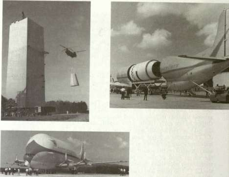
Saturn Air Transport
Top left, an Army CH-47A helicopter arrives at the MSFC dynamic test stand with the Saturn IB adapter unit it has flown 970 kilometers from Tulsa, Oklahoma. Top right, the Pregnant Guppy aircraft is loading an S-IV stage into its aft fuselage. Above, the Super Guppy arrives at MSFC in fall 1966. Right, the Super Guppy takes on an S-IVB stage.
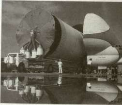
THE LOGISTICS TANGLE
string of selected SAC bases and other Air Force fields for fuel and operational support, and these installations were normally alerted ahead of time for the appearance of the strange-looking Guppy in the landing pattern. Not long after the start of Pregnant Guppy flights, a misadventure occurred, and NASA's S-IV rocket stage was temporarily impounded by Air Force security personnel. Don Stewart, who represented MSFC as a monitor for the early operational flights, recalled that the Guppy pilot had been forced off his normal route out of Los Angeles to avoid bad weather, and the plane had begun to run low on gas. Both Stewart and the pilot thought their alternate field, a SAC base, had been notified of Guppy operations. They were mistaken. After a night landing, the plane was surrounded by SAC security police brandishing carbines and M-l rifles. The SAC guardsmen were caught off balance by the large and unusual aircraft that carried a rocket, and they directed the plane to a remote corner of the airfield until the intruder's credentials could be verified. The Guppy crew dozed fitfully in the plane until the base commander was convinced of Stewart's story, checked with the proper authorities, and finally issued a clearance to refuel and take off in the early hours of the morning. 45
In flight, the Pregnant Guppy behaved normally, although Air Force and NASA ground crews had to learn to cope with some of its unusual idiosyncracies on the ground. During a stop at Ellington Air Force Base at Houston, high winds swept into the vast hold of the detached aft section, and caused light damage to the plane's tail. After a couple of mishaps involving the Super Guppy, designers beefed up the massive dome and redesigned the latching mechanisms on the hinged nose section. The Super Guppy experienced occasional engine problems, and NASA wisely kept the plane on the ground during high winds. 46
Despite these occasional incidents, the ungainly looking airplanes routinely performed their duties week after week, and flew one-of-a-kind, multimillion dollar cargoes between NASA facilities, contractor plants, and the launch site at Cape Kennedy. The Guppies transported other diversified cargoes in addition to rocket stages and engines. During 1968, the Super Guppy carried the special environmental chamber used for final preparation of the manned Apollo command module prior to launch, as well as carrying cryogenic tanks for an experimental nuclear rocket. As the Skylab orbital workshop progressed in the late 1960s and early 1970s, the Guppies ferried such components as the multiple docking adapter, the Apollo telescope mount, and the Skylab workshop itself (adapted from the S-IVB). 47 The success of Aero Spacelines and its original Pregnant Guppy attracted the attention of other firms with thoughts of diversification, and in July 1965 the company was acquired by the Unexcelled Chemical Corporation. The new organization not only proceeded with the Super Guppy configuration; it also constructed a
STAGES TO SATURN
small fleet of volumetric aircraft to haul outsized cargoes such as large aircraft sections, jet engines, helicopters, oil drilling equipment, and boats for NASA as well as for the Air Force and commercial firms. 48
Although the cargoes carried by the Guppies were limited in number, they were unique and of considerable importance. In the opinion of John Goodrum, head of MSFC logistics, the payoff of the Guppy operations was exceptional for NASA, especially during the 1966-1967 period, when closely scheduled Saturn IB and Saturn V launches put a high premium on rapid aerial deliveries of S-IVB stages and instrument unit components to Cape Kennedy. It would be too strong to say that the Guppy operations saved the Saturn program, Goodrum said reflectively, but without the availability of the unique planes, NASA might have been forced to scrub some of the scheduled launches and might have incurred horrendous costs in money and time. 49 The Guppy shipments of outsize components such as jet engines and wing sections offered a unique and highly valuable mode of transport in terms of commercial operations. The Guppies carried a limited number of otherwise awkward and critical items in situations where the saving of time was paramount. Nowhere was this capability more evident than in the nation's Apollo-Saturn program.
SUMMARY
Logistics were not thoroughly analyzed at the start of the Apollo-Saturn program. The logistical requirements of Saturn parts, spares, and propellants, including the delivery of large rocket stages from the West Coast to the East Coast, took considerable manpower and unanticipated planning time. The dimensions of the stages required custom-built transporters, customized inspection equipment, and other accessories. Logistics managers learned to allot plenty of time for the planning and coordination that was necessary to move Saturn rocket stages over public roadways.
The extent of NASA's water and air operations was little known to the general public. The water routes encompassed passage through both the Pacific and the Atlantic oceans, and required negotiation of the Panama Canal, the Gulf of Mexico, and the Intracoastal Waterway. The waterborne routes were time-consuming, but remained the only feasible mode of transporting the largest of the Saturn stages. Saturn transportation also relied on inland waters for transportation between the Gulf Coast and Huntsville; logistics managers took advantage of canals and other waterways for the transfer of the S-IC and S-II stages from the manufacturing center at Michoud and from test areas at the Mississippi Test Facility. The airborne operations represented the imagination and ingenuity of the Saturn program. The Guppy aircraft made an invalua-
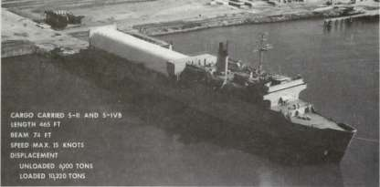
The Navy assisted NASA with water transportation of Saturn stages. It made available the U.S.N.S. Point Barrow, which first carried S-IVB stages from California through the Panama Canal to the Gulf coast; when the Guppy aircraft took over S-IV transport, Point Barrow carried S-II stages from California to the Mississippi Test Facility.
•COSTS SHOWN ARE FOR FULL CREW IN OPERATIONAL STATUS
ble contribution to the maintenance of schedules, which held the line on costs.
NASA and MSFC implementation of a logistics plan was an essential factor in meeting deadlines, especially for rocket launches. Stages reached Kennedy Space Center on schedule, and NASA's program for a lunar landing before the 1970s stayed close to its timetable.
Step by Step
Few events are as spectacular as that of a Saturn V at liftoff en route to the moon. In fact, the commanding role of the mammoth vehicle has tended to obscure its supporting players, the Saturn I and Saturn IB boosters. Chapter 11 recapitulates some of the milestones of these earlier rockets and describes some of the payloads and visual instrumentation used in early launches to acquire crucial information about the near-Earth environment and the behavior of exotic propellants in the weightlessness of space.
Perhaps the biggest gamble of the Apollo-Saturn program rode on the launch of AS-501, the first Saturn V to lift off from Cape Kennedy. The decision to go "all up" on this launch circumvented the costly and time-consuming process of incremental flight testing of each stage prior to launching a complete vehicle. This mission, followed by troubleshooting the problems of AS-502, the first manned Saturn V launch (AS-503), and the first lunar landing mission (AS-506, or Apollo 11), constitute the highlights of chapter 12.
Qualifying the Cluster Concept
The Saturn I flight tests were uniformly successful, and the unique size and complexity of the clustered rocket made its success all the more remarkable. Midway in the Saturn I flight test programs, Dr. F. A. Speer, Chief of MSFC's Flight Evaluation and Operational Studies Division, Aero-Astrodynamics Laboratory, summarized the first five flights (which included the first live two-stage vehicle, SA-5); a summation that turned out to be a prognosis for all 10 vehicles of the Saturn I series. "All five flights were complete successes," Speer reported, "both in achieving all major test missions and in obtaining an unprecedented volume of system performance data for flight analysis." Speer asserted, "It is correct to state that, up to this point, no major unexpected design change had to be initiated on the basis of flight test—thus proving the design maturity of the Saturn I vehicle." 1 Troubles occurred, to be sure; but they did not cause serious delays in the mission schedules, nor serious redesign efforts.
On 27 October 1961, the first Saturn lifted from the launch pad at Cape Canaveral. All the static tests, dynamic tests, and test firings before this first launch had pointed to a successful mission, but until the liftoff of SA-1, no one could say for certain that an eight-engine monster like the Saturn would really work. The long countdown demonstrated the compatibility of the ground support equipment, and the launch crew released the "bird" (as NASA crews called the rockets) with no technical "hold" to mar the mission. The SA-1 vehicle soared to an altitude of 137 kilometers and impacted the Atlantic Ocean 344 kilometers downrange.
323
STAGES TO SATURN
The postmission report verified the confidence of the Marshall team in the structural rigidity of Saturn's airframe, and the quartet of gimbaled outboard engines demonstrated the design goals of vehicle control and reliability. The validity of the concept of the clustered Saturn booster could no longer be questioned. 2
EARLY BIRDS: BLOCK I AND BLOCK II
The 10 launches of the Saturn I booster included both Block I and Block II versions. The H-l engine was common to all the vehicles, but a number of significant differences distinguished Block I from Block II. The most visible distinguishing feature for the Block I series, SA-1 through SA-4, was the absence of aerodynamic fins on the first stage. Moreover, the Block I vehicles did not include live upper stages. Consistent with NASA's building block concept and the requirements for validating the clustered concept first, these first Saturn I launches used live lower stages only. The dummy upper stages looked like the future live versions, had the same approximate center of gravity, and had identical weight. Inert S-IV and S-V stages, topped by a nose cone from an Army Jupiter rocket, brought the typical height of the Block I series to about 50 meters.
The flight of SA-1 was remarkable for the small number of modifications that were required for succeeding flights. Experience gained from successive launches inevitably resulted in changes, but the only major difficulty that turned up with SA-1 was an unanticipated degree of sloshing of propellants in the vehicle's tanks. Beginning with vehicle SA-3, additional antislosh baffles were installed, which brought this undesirable characteristic under control. None of the Block I missions called for separation of the upper stages after the S-l first-stage engine cutoff, although the SA-3 and SA-4 vehicles experimentally fired four solid-fuel retrorockets, anticipating the separation sequence of Block II missions. Other preliminary test items on SA-4 included simulated camera pods and simulated ullage rockets on the inert S-IV stage. The last two vehicles also carried a heavier and more active load of electronics and telemetry equipment. The telemetry equipment and associated test programs varied with the goals of each mission, but the total array of such gadgetry and the means of acquiring information help explain not only the success of the Saturn program but also the comparatively low number of R&D flights required to qualify the vehicle as operational.
The flight of SA-4 culminated with only seven engines firing instead of eight. One of the appealing features of clustered engines involved the "engine-out capability"—the prospect that, if one engine quit, the remaining engines could compensate by burning longer than planned. So NASA technicians programmed a premature cutoff of one engine 100 seconds
QUALIFYING THE CLUSTER CONCEPT
into the flight. The experiment succeeded, the SA-4 performing as hoped on the remaining seven engines.
During this basically uneventful series of launches, the Saturn I carried its first payloads. The missions of SA-2 and SA-3 included one very unusual experiment, called Project Highwater, authorized by NASA's Office of Space Sciences. The inert S-IV and S-V stages for these launches carried 109000 liters (30000 gallons) of ballast water for release in the upper atmosphere. As NASA literature stated, "release of this vast quantity of water in a near-space environment marked the first purely scientific large-scale experiment concerned with space environments that was ever conducted." One of the questions apparently bothering NASA planners was the consequences of a stage explosion in space or the necessity of destroying one of the Saturn rockets at a high altitude. What would happen to the clouds of liquid propellants released in the upper atmosphere? Would there be radio transmission difficulties? What would it do to local weather conditions? Project Highwater gave answers to these questions. At an altitude of 105 kilometers, explosive devices ruptured the S-IV and S-V tanks, and in just five seconds, ground observers saw the formation of a huge ice cloud estimated to be several kilometers in diameter, swirling above the spent stage to a height of 145 kilometers above the sea. It was a dramatic sight for the observers below at Cape Kennedy and marked the first use of the Saturn launch vehicles for a purely scientific mission. 3
During 1964, introduction of the Saturn I Block II vehicles marked a new milestone in large launch vehicle development. To the casual observer, the most obvious distinction was the addition of the eight aerodynamic fins to the lower stage for enhanced stability in flight. As far as NASA was concerned, the most significant feature of Block II was the addition of a live upper stage, the S-IV, built by Douglas. Moreover, the S-IV stage also marked the inauguration of liquid hydrogen propellant technology in the Saturn vehicle program; six RL-10 liquid hydrogen rocket engines supplied by Pratt & Whitney were used. These engines in the upper stage would allow orbital operations for the first time in Saturn I launches. Above the S-IV stage, the Block II vehicles also carried the first instrument canisters for guidance and control. The instrument canister controlled the powered ascent of the big rocket and carried an array of sensing and evaluation equipment for telemetry acquisition from the ground.
In addition to the untried cluster of six RL-10 liquid hydrogen engines for the S-IV, the Block II Saturns relied on uprated, 836 000-newton (188 000-pound) thrust H-l engines, that gave the first stage a total thrust of slightly over 6 672 000 newtons (1.5 million pounds). Further, the new engines powered an improved S-l first stage. The length of the propellant containers, for instance, had been increased to provide additional propellants for the uprated engines. Despite the added weight penalty of
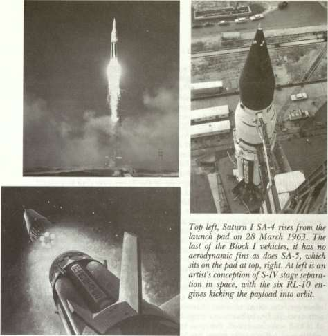
Top left, Saturn I SA-4 rises from the launch pad on 28 March 1963. The last of the Block I vehicles, it has no aerodynamic fins as does SA-5, which sits on the pad at top, right. At left is an artist's conception of S-IV stage separation in space, with the six RL-10 engines kicking the payload into orbit.
the extended container length, there was an overall gain in efficiency of the Saturn I first stage because of numerous changes. These included, for example, weight savings through simplification of the propellant interchange system that lessened the amount of residual fuel and oxidizer trapped in the propellant interchange lines. Heightened confidence in the reliability of the H-l engines enabled reduction of the holddown time at launch from 3.6 .seconds to 3.1 seconds; this savings shifted an additional 0.5 second of maximum boost to the powered flight phase, thereby enhancing the vehicle's performance. Efficiency of propellant depletion was also increased as a result of experience and numerous subsystems changes. The first SA-1 vehicle used 96.1 percent of its fuel, for example; by the time of the flight of SA-10, the use had reached 99.3 percent. Payload capability was also increased by reducing the amount of pressurants on board. The height of the Block II rockets
QUALIFYING THE CLUSTER CONCEPT
varied with the different missions they performed. With a Jupiter nose cone, SA-5 was about 50 meters high, but the remainder of the Block II vehicles, SA-6 through SA-10, carried prototype Apollo capsules and other payloads, which stretched them to approximately 57.3 meters. 4
Although electronic instrumentation and telemetry provided reams of pertinent information on the health and performance of the rocket during a mission, flight-test personnel needed visual documentation as well. For this reason, the Saturn vehicles all carried an invaluable array of visual instrumentation equipment. The Block II series continued the visual instrumentation that was begun during Block I flights. MSFC engineers wanted very much to know about the behavior of propellants within the vehicle during flight, so a number of different visual instrumentation systems were carried. Great attention was given to on-board television systems. Work with on-board TV began at MSFC early in 1959 under the cognizance of the Astrionics Division. Research emphasized the development of a compact and extremely rugged camera to stand up under the punishment of liftoff, boost phase, and free trajectory coast in extreme temperature and pressure environments. MSFC tried out the system on 31 January 1961 on the Mercury-Redstone that carried the chimpanzee Ham. The real-time, high-resolution transmitting system worked very well from liftoff across the optical horizon to about 320 kilometers distant. At the same time, the MSFC group was perfecting multiple-camera, single-transmitter equipment for the Saturn I missions; it became operational just prior to SA-1 in the fall of 1961. The system offered "real-time display and permanent storage of pictures televised from the vehicle during test flight." As mounted on SA-6, for example, two camera locations were utilized. On the ground, a videotape recorder and a kinescope recorder provided real-time viewing and storage capability. To identify each picture image, the kinescope recorder system included a digital key, indicating the camera position and time-of-flight reference. Within five minutes of a completed flight, high-resolution individual shots could be available for study. 5
Television was originally selected for use on rockets because recovery of motion picture film seemed uncertain. Still, the TV units had limitations because a number of critical vehicle functions were not compatible with television camera operations and imagery. For this reason, the Saturn I flights also incorporated motion picture coverage of test flights.
A technique to incorporate such coverage was successfully demonstrated during the Redstone program in 1961 when inflight photographic instrumentation captured the separation of a warhead from a Redstone rocket booster. Early in the Saturn development program, investigators recognized the need for a similar photo system for visual analysis of phenomena that could not be simulated during ground testing or acquired through vehicle telemetry. Plans provided for inflight
STAGES TO SATURN
motion picture and television coverage for the first stage of the SA-1 mission in October 1961 on the basis of the Redstone camera technology. Lack of time and money prevented use of such equipment for the first Saturn launches, and effort was redirected toward the mission of SA-5, the first live, two-stage Saturn I. Responsibility for the camera became a joint program of MSFC's Astrionics Laboratory and the Propulsion and Vehicle Engineering Laboratory. With approval for the project in October 1961, Marshall named Cook Technological Center, a division of the Cook Electric Company of Chicago, as the major contractor. Cook Technological Center then proceeded with the development and manufacture of jettisonable and recoverable camera capsules to be flown on SA-5, 6, and 7.
The camera capsules consisted of three sections: the lens compartment, with camera lens and a quartz viewing window; the combined camera and its control unit in a separate compartment; and a recovery compartment, housing descent stabilization flaps and a paraballoon for descent and flotation, a radio and light beacon for aid in recovery operations, and more conventional recovery devices such as sea-marker dye and shark repellant. The capsules were designed to cope with the stresses of powered flight, ejection, reentry, impact into the sea, and immersion in saltwater. Four model "A" capsules were positioned to record external areas of the Saturn vehicle, facing forward. Four more model "B" capsules were mounted in an inverted position to record the phenomena inside designated LOX tanks and around the interstage between first and second stages. For the "B" models, technicians linked the cameras with fiberoptic bundles to transmit images from remote locations and used incandescent lights and strobe systems for illumination. Engineers preferred to use color film whenever possible because it provided a better three-dimensional image than the gray tones of the black and white film. One camera used an extremely fast and sensitive black and white film to record phenomena inside the center LOX tank because of the lighting inside the tank. 6
The launch of SA-5, 29 January 1964, was what NASA liked to call "a textbook launch." As the first Block II vehicle, the SA-5 recorded a number of firsts: first S-IV stage to fly, first guidance and control packages, and first successful stage separation. The SA-5 was the first Saturn using uprated engines, marked the first successful recovery of motion picture camera pods, and was the first orbital Saturn vehicle.
Although SA-6 got off the launch pad without a hitch, it caused a moment of concern among mission controllers when one of the H-l engines inexplicably shut off prematurely. Unlike SA-4, this was not part of the programmed flight, but the Saturn performed beautifully, proving the engine-out capability built into it by Marshall engineers. With hardly a perturbation, the vehicle continued its upward climb; stage separation and orbit of the S-IV upper stage went as planned. Telemetry pinpointed
QUALIFYING THE CLUSTER CONCEPT
the engine problem in the number 8 engine turbopump, which shut down at 117.3 seconds into the flight. When telemetered information was analyzed, engineers concluded that the teeth had been stripped from one of the gears in the turbopump, accounting for the abrupt failure of the engine. Luckily, Marshall and Rocketdyne technicians, through previous ground testing of the turbopump, had already decided that its operating characteristics dictated a modified design. A change had already been planned to increase the width of the gear teeth in this particular turbopump model, and the redesigned flight hardware was to fly on the next vehicle, SA-7. Consequently, there were no delays in the Block II launch schedule and, incidentally, no further problems with any of the H-l engines in flight. 7
Otherwise, the flight of SA-6 was eminently successful. The SA-6 was the first to carry a dummy Apollo capsule into orbit, and it tested the capsule by jettisoning the launch escape system tower, part of the Apollo spacecraft hardware development. The performance of the Block II series progressed so well that the Saturn I boosters were declared fully operational by NASA officials after the SA-7 flight (18 September 1964), three launches earlier than expected. The unmanned Apollo spacecraft on board met guidelines for design and engineering, compatibility of the spacecraft and launch vehicle, and operation of the launch escape system. The launch also confirmed the integrity of major critical areas of the launch vehicle such as the Saturn I propulsion systems, flight control, guidance, and structural integrity. For SA-7, the only event that might be considered an anomaly involved the recovery of the cameras. After stage separation, the jettisoned camera pods descended by parachute and landed in the sea, downrange of the expected recovery area. Then Hurricane Gladys blew in and closed the sector. Seven weeks later, two of the ejected SA-7 camera capsules washed ashore, encrusted with barnacles, but with the important films undamaged. 8 The last three Saturn I vehicles carried a redesigned instrument unit with more sophisticated components that did not require separate, pressurized sections; the result was a lighter and shorter vehicle with enhanced performance. With a different environmental control system, the new instrument unit was the prototype for the Saturn IB and Saturn V vehicles. The most significant feature that set all three vehicles apart from their predecessors was the payload—the unusual, winglike meteoroid technology satellite known as Pegasus. 9
SATURNS FOR SCIENCE: THE PEGASUS PROJECT
Project Pegasus was something of an anomaly in the Apollo-Saturn program. Responsibility for Pegasus management, design, manufacture, operation, and analysis of results was charged to Marshall Space Flight
STAGES TO SATURN
Center. The reputation of the Marshall center rested not on satellites, but on the launch vehicles designed and engineered by the von Braun team. The Pegasus was also unique because it was the only NASA satellite to use Saturn boosters. It was especially significant from the standpoint of designing later versions of the Saturn vehicles. Data collected by Pegasus would either confirm the ability of existing designs to operate without danger from meteoroid impact or require new designs to cope with the dangers of meteoroid collisions. The Pegasus project was an example of the painstaking scope of the Apollo-Saturn program research and development to avert any sort of serious problem. Finally, the project demonstrated several ways in which the operation contributed to the general store of scientific knowledge, as well as to the design and operation of boosters, spacecraft, and associated systems. 10
Meteoric particles striking the Earth travel at speeds up to 72 kilometers per second. A dust-speck particle, weighing a mere 0.0085 gram, at such a speed packs the energy of a .45-caliber pistol fired point blank. Meteoroid phenomena in the near-Earth space environment commanded serious attention, the more so because many critical moments of manned Apollo-Saturn missions occurred in potentially hazardous zones. The Gemini spacecraft experienced meteoroid impacts many times during a 24-hour period, but the specks encountered in the lower Gemini orbits were too small to cause a puncture in the spacecraft skin. Higher orbits for the Apollo series raised concerns about heavier meteoroid particles. "It is the stuff of intermediate size that concerns a space-vehicle designer," Wernher von Braun emphasized. "Particles of only a few thousandths of a gram, whizzing at fifteen to twenty miles a second, can penetrate a spacecraft's wall or a rocket's tank. They constitute a definite risk." A meteoroid puncture in a gas compartment or propellant tank could cause a serious leak, and in the case of a highly pressurized container create an explosive rupture. Particles also created heat at the moment of impact. With highly volatile propellants aboard, as well as the oxygen-enriched cabin atmosphere, penetration by a burning meteoroid would touch off a destructive explosion. Even without complete penetration, impacts could cause "spalling." The shock of impact with the skin of a spacecraft could eject fragments from the skin's interior surface to richochet inside the vehicle. These flying fragments raised a serious possibility of danger to a crew or to vital equipment. The need for information was clear. 11
Late in 1962, designers of spacecraft of the Apollo-Saturn program had very limited knowledge of the abundance of meteoroids in the vicinity of Earth, where numerous manned flights were planned and where crucial phases of the lunar missions would occur. Astronomers could provide information on meteoroids with mass above 10~ 4 grams, since they could be sighted optically from observatories or tracked by radar. Vehicle sensors like those on Explorer XVI provided some statistics
QUALIFYING THE CLUSTER CONCEPT
on the abundance of smaller particles, but the lack of data on the intermediate-sized meteoroids caused persistent doubts, because information on the intermediate range presented configuration criteria "of utmost importance for the design of spacecraft." Pegasus was intended to fill in the gap. As stated in the official report: "The objective of the Pegasus Meteoroid Project is the collection of meteoroid penetration data in aluminum panels of three different thicknesses in near-earth orbits. ... In fact, the abundance of meteoroids in the mass range 10~ 5 to 10~ 3 will be decisive with respect to the necessary meteoroid protection for future long-duration manned missions." 12
Attached to the S-IVB second stage, Pegasus deployed in 60 seconds, extending two wings to a span of 15 meters, with a width of 4.6 meters and a thickness of about 50 centimeters. The Pegasus wing mount also supported solar cell panels for powering the satellite's electronics. 13 In full deployment, the Pegasus in flight exposed about 80 times more experimental surfaces than Explorer meteoroid detectors exposed. The meteoroid impact sensor was a charged capacitor with a thin dielectric, a metal foil on one side, and a sheet of aluminum on the other side. Perforation by a meteoroid caused a momentary short between the metal plates. The discharge burned off any conducting bridges between the two metal layers; thus the capacitor "healed" after each perforation. The shorts, or discharges, were recorded as hits. 14 Special sensors carried by the satellite provided information on (1) the frequency and size of meteoroids capable of damaging the spacecraft structure and equipment, and (2) the direction of the meteoroids as a function of frequency and power of penetration. 15
PEGASUS MISSIONS
Planned as part of the qualification program for the Saturn I rocket, the three Pegasus flights instead assumed the status of completely operational flights following the success of SA-7. On 29 December 1964, Pegasus I, the first meteoroid detection satellite, arrived at Cape Kennedy to join its Saturn I booster, SA-9. 16 The numerical designation of the boosters fell out of sequence because of variations in their manufacturing. After designing and building its own first-stage boosters for the Saturn I program, NASA-MSFC departed from the original concept of work in-house to rely on industrial contractors. Chrysler Corporation became the prime contractor for the S-I first stage of the Saturn I, and Douglas continued to supply the S-IV second stage. In the process of gaining experience, Chrysler's first Saturn booster, SA-8, moved less rapidly through manufacturing and test than the last booster produced by MSFC, SA-9. In retrospect, it seems appropriate that MSFC's last rocket launched the first Pegasus, MSFC's first satellite. 17
STAGES TO SATURN
To carry the Pegasus aloft, the S-IV second stage and the instrument unit underwent some minor modifications. Because heat absorption could upset the satellite's thermal balance, Douglas supplied the S-IV with a special coat of paint to reduce the heating factor. New equipment consisted of an "auxiliary nonpropulsive vent system" to cut down excessive tumbling and enhance the orbit stabilization. Designers also incorporated the reworked instrument unit. NASA officials scheduled the launch of SA-9 for 16 February 1965, and technicians at Cape Kennedy worked hard to meet their preflight deadlines. With the Pegasus payload shrouded in the Apollo service module and adapter, KSC personnel affixed it to the S-IV second stage on 13 January. The next day, at Launch Complex 37-B, workers finished mating the Apollo command module to the AS-9 vehicle. In their drive for flawless operations, NASA and contractor personnel continued to tinker with the satellite right up to the last minute. On 14 February, only two days before the launch, technicians from MSFC and Fairchild made final changes in the meteoroid detection subsystem.
On 16 February, the Saturn I vehicle SA-9 successfully lifted off from Launch Complex 37-B with NASA's largest unmanned instrumented satellite to date. It was the first time a Saturn rocket had been used to loft a scientifically instrumented payload into space. In a flawless mission, the Saturn I put Pegasus into orbit, and inserted the command module into a separate orbit where it would not interfere with scientific measurements. A remotely controlled television camera, mounted atop the S-IV second stage, captured a vision of the eerie, silent wings of Pegasus I as they haltingly deployed.
Pegasus took 97 minutes to circumnavigate the Earth. From scattered Moonwatch stations, observers reported the magnitude of the satellite as zero to seven as it moved through space. 18 When the residual fuel from the S-IV vented, Pegasus began to tumble, with occasional intense flashes when solar rays glanced off the large wings. With its moderate orbital inclination (31° to the equator), the best path for observation in the United States ran close to Boston and Chicago, but conditions were difficult because the satellite hovered only a few degrees above the southern horizon and the extensive slant range made sightings difficult. However, at the Smithsonian Institution's observatory in South Africa, visual sightings were easily made. As the sun's light glittered on the outstretched wings of Pegasus, observers caught flashes of reflected light that lasted for as long as 35 seconds. 19
Because Pegasus relied on solar cells for power, NASA spokesmen hoped that the satellite would work at least a year, but with 55 000 parts in the system, some project officials were reluctant to predict a full 12-month lifetime, at least for the first vehicle. In the beginning, everything seemed to be working well. On its fourth orbit, scientists thought they caught the first signal of a meteoroid hit, and by the end of
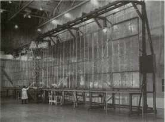
Above, a Fair child technician checks out the extended Pegasus meteoroid detection surface in March 1964. At right is an artist's conception of Pegasus in orbit with meteoroid detector extended.
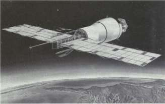
the first seven days of flight, they were eagerly anticipating the first full reports read out from the Pegasus memory banks. In the first two weeks, Pegasus indicated almost a score of hits by interplanetary objects. By late May, NASA verified more than 70 meteoroid penetrations. NASA spokesmen unhappily verified extensive failures in the Pegasus satellite as well, but MSFC and Fairchild personnel had just enough time to solve these difficulties before the launches of Pegasus II and III. 20
The second of the meteoroid satellites, Pegasus II, arrived at KSC on 21 April 1965. The final countdown for SA-8 began on the afternoon of 24 May. With a scheduled 35-minute hold, the countdown ticked on without a hitch into the early morning of the launch, 25 May. The flight of SA-8 marked two especially notable departures from past experiences in the Saturn program. For one, the SA booster was manufactured by Chrysler, and Saturn flew with a first stage supplied by a contractor for the first time. It symbolized the end of an era for the von Braun team and the long-standing arsenal "in-house" philosophy transferred from the
STAGES TO SATURN
old ABMA days to the young space program of NASA. For another, SA-8 blasted off at 2:35 a.m. in the first night launch of a Saturn rocket. Highlighted against the dark night skies, the winking lights of the launch tower and the blinding glare of the floodlights around the base of the launch pad gave the scene an unusual new fascination. The darkness gave even higher contrast to the fiery eruption of ignition and the lashing tongues of fire during liftoff. Always awesome, the thundering roar of the Saturn I's ascent seemed mightier than ever before, as it seared its way upward through the dark overcast above the Atlantic. NASA officials timed the launch to avoid conflict in the communications with Pegasus I, still in orbit.' Both satellites transmitted on the same frequency, and the fiery night launch of Pegasus II put the second satellite at an angle of 120°, one-third of an orbit apart from the first. 21
The launch illustrated the accuracy of the propulsion systems and confirmed the reliability of the flight electronics, which were improved in successive launches of the Saturn I series. Wernher von Braun praised the flight as "a lesson in efficiency," and George Mueller, Associate Administrator for Manned Space Flight, commented that the flight was very significant to future space flights, with their need for very close timing for rendezvous missions. Time magazine considered the flight from other points of view. The magazine approvingly reported the success of the cluster concept used on the S-l booster and the faultless performance of the second stage with its six RL-10 engines: "The smooth success of last week's launch suggests that LH 2 has at last become a routine fuel." The editors acknowledged the need for more information on meteoroid hazards in space flight but found the greatest significance in the launch itself. "Far more encouraging for space exploration," said Time, "was the smoothness with which the many-tiered rocket was dispatched into the sky." So often a rocket vehicle spent weeks or month on the pad with delays, but no setbacks occurred in the launch of SA-8, "which left its pad as routinely as an ocean liner leaving its pier." 22 The second Pegasus satellite began returning data in short order. Within one day after launch, it indicated two meteoroid penetrations. Modifications on Pegasus II included successful refinement of the detector electronics and a handful of minor readjustments. The second Pegasus experienced some troubles during its mission, primarily with the analog and digital telemetry channels. Technicians finally smoothed out the digital failure, and even though the analog transmissions continued intermittently, they worked well enough to rate the mission a success. Tracing the source of trouble, workers finally decided it originated in a thunderstorm during preparation of the spacecraft on the pad, because the wettest section contained the circuit failure. 23
On 21 June 1965, the Apollo command module and associated hardware arrived at KSC for the launch of the last meteoroid detection satellite, Pegasus III. With planned modifications for Launch Complex
37-B to service the uprated Saturn IB launch vehicle, NASA officials decided to move the flight of SA-10 ahead to 30 July to avoid delays in both the launch and the modifications of the launch pad. Technicians ran a series of checks to verify panel deployment and compatibility of systems, then joined Pegasus III to the instrument unit of the SA-10 vehicle. On 27 July 1965, the KSC launch crew ran an uneventful and successful countdown demonstration test for SA-10, the last Saturn I. By 29 July, the final phase of the launch countdown was under way and proceeded with no technical holds to liftoff on the next day. The SA-10 vehicle performed flawlessly, inserting the command module and Pegasus III into the planned orbital trajectory. On the basis of data from all three meteoroid detection satellites, NASA spokesmen announced in December that the Apollo-Saturn structure would be adequate to withstand destructive penetration by meteoroids during space missions. The Pegasus project was successful. 24
The information gathered by the Pegasus trio included much more than variations in theoretical meteoroid penetration data. In his capacity as Director of the Space Sciences Laboratory, Ernst Stuhlinger praised the secondary results, which returned scientific data valuable to the design and engineering of future spacecraft, as well as knowledge of specific scientific nature. "It sometimes occurs that an experiment, planned for one specific objective, provides observational results far beyond the single-purpose mission for which it was originally conceived," he said. "Project Pegasus, which has the primary objective of measuring the near-Earth environment, is an example in case." For the benefit of spacecraft designers, the 65 000 hours accumulated in all three missions provided significant and valuable data on meteoroids, the gyroscopic motion and orbital characteristics of rigid bodies in space, lifetimes of electronic components in the space environment, and thermal control systems and the degrading effects of space on thermal control coatings. For physicists, the Pegasus missions provided additional knowledge about the radiation environment of space, the Van Allen belts, and other phenomena. 25
The last of the meteoroid detection satellites, Pegasus III, carried a captivating experiment, one of the first intended to be left in space, to be personally retrieved by an astronaut at some future date. Eight large detector segments were removed from the Pegasus wings, replaced with "dummy" panels and 48 temporary coupons, cut from samples of the detector surfaces. The coupons, in turn, carried 352 items of test materials and thermal samples, some of them in use, others considered as candidates for future application. Examples of the test items included aluminum skin specimens, ranging from sandblasted and anodized surfaces to pieces covered with luminescent paint and gold plate. The launch of Pegasus III put it into an orbit of 530 kilometers. After 12 months, NASA planners expected the orbit of Pegasus III to decay some,
STAGES TO SATURN
putting it in position for a potential rendezvous with a Gemini spacecraft. Theoretically, one of the Gemini astronauts could emerge from the Gemini capsule, maneuver himself to the Pegasus wings, recover a selected group of test specimens, and return to the spacecraft. With the return of the astronaut's armful of samples to Earth, scientists could not only make direct studies of the effect of meteoroid impacts on metals in interplanetary space but also examine specimens of meteoroids taken directly from the space environment. Unfortunately, the experiment was never possible during Gemini, and the final Pegasus reentered the atmosphere on 4 August 1969. Its destruction during reentry brought an untimely end to an intriguing experiment. 26
SATURN I IN RETROSPECT
In terms of rocket development, the series of Saturn I launches was remarkably successful. Most rocket programs had severe teething troubles early in the game; up to two or three dozen test shots and loss rates of 50 percent were not out of the ordinary. True, the Saturn I used engines and tanks extrapolated from earlier programs, but uprating the H-l engine had brought difficulties, and a cluster of this magnitude was untried. Moreover, the later Saturn missions introduced a sizable new LH 2 upper stage, powered by a cluster of six RL-10 engines.
For all this, there seems to have been persistent criticism of the Saturn I series of launches. Basically, it appeared to be a multimillion-dollar launch vehicle program with no significant missions or payloads. Even before the launch of SA-2 in the spring of 1962, NASA had announced the Saturn V. It was this vehicle, not Saturn I, that had the mission and payload that counted: a lunar voyage with a payload equipped to land men on the moon and get them back again. As a preliminary to Saturn V missions, plans were already in progress for the Saturn IB, which would test a Saturn V third stage in orbit and begin qualification of crucial hardware such as the command module and lunar module.
The Saturn I, as one NASA historian has written, was a "booster almost overtaken by events." A number of individuals, within NASA as well as on the outside, felt that Project Highwater and, to a lesser extent, Project Pegasus were makeshift operations to give Saturn I something to do and to placate critics who complained that the Saturn was contributing little to science. There is probably some truth in these allegations. Highwater in particular seems to have been an impromptu operation, revealing nothing new. Although NASA literature solemnly referred to scientific aspects, von Braun called Highwater a "bonus experiment," and noted that the water was already aboard Saturn I stages as ballast. 27
With hindsight, the apparently superfluous Saturn I launches still contributed to the Saturn program, underscoring the innate conserva-
tism of Marshall Space Flight Center. Aware of potential early failures in a launch series, MSFC evidently planned for several, but to make the series as successful as possible, Marshall also went into each launch with vehicles tested and retested to the point where the possibility of failure was virtually eliminated. Marshall's own thoroughness made the remarkable string of 10 successful launches seem unnecessarily redundant. In any case, the launches verified many concepts for systems and subsystems applied to later Apollo-Saturn missions, provided valuable experience in the operation of LH 2 stages, demonstrated the validity of the cluster concept, and tested early versions of Saturn guidance and control. Payloads for the Saturn I launches may not have been as dramatic as those for other vehicles, but Saturn I missions, overall, were nevertheless beneficial.
In a strict sense, the series of Pegasus launches was not very earthshaking. None of the three satellites promoted any fantastic new discoveries; no dramatic design changes occurred in either the Saturn launch vehicles or the Apollo spacecraft as a result of unexpected information about meteoroid penetration. The value of the Pegasus involved a positive, rather than a negative, reading of the test results. The satellites confirmed basic estimates about meteoroid frequency and penetration in the operational environment of the Apollo-Saturn vehicles. This confirmation provided a firm base of knowledge to proceed with basic designs already in the works. In fact, it was good that the Pegasus series did not turn up significantly different data, which would have entailed costly redesign and additional time and research into meteoroid phenomena as related to boosters and spacecraft. Instead, the effect was to add to the growing confidence of Apollo-Saturn designs already in process and to permit NASA to plunge ahead toward the goal of landing man on the moon within the decade. It would have been easy to dismiss what was, in fact, a successful developmental phase in the overall Apollo-Saturn program. 28
In terms of subsequent programs, the legacy of Pegasus included significant contributions in the development of thermal coatings used on many major satellites, as well as on the Apollo spacecraft. The Pegasus also had a significant impact on the development of the communications satellite (comsat) project, because the results indicated that the comsat satellites would indeed have a profitable lifetime in orbit, the probability being high that they would survive or escape damage from meteoroids. Wernher von Braun was emphatic on this point: "I would say the Pegasus data have really become the main criteria of spacecraft design, ever since Pegasus, for all manned and unmanned spacecraft." 29
JUNIOR PARTNER TO APOLLO: SATURN IB
The Saturn IB represented significant advances toward the hardware and techniques to be used in lunar landings. S-IB first stages included a
STAGES TO SATURN
number of modifications to increase the overall vehicle performance, as compared with the S-I series. The aerodynamic fins were further modified, and changes in fabrication techniques saved considerable weight (see chapter 3). The eight H-l engines were uprated from 836 000 to 890 000 newtons (188 000 to 200 000 pounds) of thrust each. Most importantly, the Saturn IB missions provided an opportunity to flight-test the first Saturn V hardware. The S-IVB upper stage with its single J-2 engine was nearly identical to the upper stage carried on the Saturn V, and the same was true of the instrument unit (see chapter 8). 30
Saturn IB missions began with the unmanned launch of AS-201 from KSC Launch Complex 34 on 26 February 1966. With both stages live, the vehicle made a successful 32-minute suborbital flight, reaching an altitude of over 480 kilometers with impact into the south Atlantic about 320 kilometers from Ascension Island.
The primary tests concerned separation of the spacecraft, followed by the command module's reentry into Earth's atmosphere. The maneuver successfully demonstrated that the command module's heat shield could withstand the intense temperatures created by atmospheric friction during reentry. The first Saturn IB experienced relatively few problems in flight, although the mission was nearly canceled during countdown. Bad weather delayed the launch date for three days, and on the day of the liftoff, launch officials postponed the firing command for three hours while technicians did some trouble-shooting on several last-minute technical problems. The most serious difficulty involved the gaseous nitrogen purge system that cleaned out the engines and the related machinery prior to launch. At T—4 seconds, the gaseous nitrogen pressure limits had dropped below the red-line level and an automatic cutoff sequence was started. After resetting the equipment and starting the countdown once more, at T—5 minutes engineers perceived the problem again and requested a hold. Engineers estimated that it would possibly take two hours of work to recheck and reset all the equipment. Reluctantly, the recommendation was made to scrub the launch. Still searching for options, a group of launch crew engineers suggested a different test of the system to assess other alternatives, and stage engineers agreed; so the countdown was restarted at T—15 with the gaseous nitrogen pressures reset at different levels. The countdown and launch were finally completed successfully. 31
Saturn IB missions carried inflight visual instrumentation perfected during the Saturn I missions. Only two movie cameras were used, however, and a ribbon parachute was added to the capsules to slow their descent even more, because some capsule damage had occurred on the SA-6 mission. Typically, the cameras were located atop the first stage to record stage separation and ignition of the S-IVB second stage. On the AS-201 flight neither of the parachutes worked properly, and the Air Force recovery team found only one capsule. On the other hand, the
QUALIFYING THE CLUSTER CONCEPT
guidance and control system performed as expected, telemetry was good, and no structural problems were discerned. The propellant utilization system worked as designed: the LOX and LH 2 were depleted simultaneously. All things considered, the two-stage Saturn IB vehicle achieved a notable inaugural flight. 32
The second launch of the Saturn IB series, on 5 July 1966, carried an out-of-sequence number designation, AS-203. Originally scheduled for the second launch in the series, AS-202 became third in line to gain additional time for checkout of its Apollo spacecraft payload. NASA made the announcement in April, explaining that the AS-203 mission primarily involved launch vehicle development. Mission objectives for the second Saturn IB launch concentrated on the orbital characteristics and operation of the S-IVB second stage, so the vehicle had a simple aerodynamic nose cone in place of the Apollo spacecraft. Launch officials considered the second stage itself, with 10 metric tons of liquid hydrogen aboard, as the payload. Testing was scheduled to gain further information about liquid hydrogen in the orbital environment and about procedures for reignition of the S-IVB in orbit, a requirement for Saturn V missions in the future. The reignition sequence was not to be live but simulated with the S-IVB and J-2 engine systems. In an attempt to telescope development of the stage and engine operations, last-minute consideration was given to an actual restart of the J-2 engine. A number of people within Marshall Space Flight Center, however, opposed restarting the J-2 because that would unduly complicate the developmental flight. In a letter to Major General Samuel C. Phillips, Eberhard Rees estimated that a complete restart sequence would require an additional 1800 kilograms of liquid oxygen and 1400 kilograms of other equipment and provisions and would compromise the main test goals of the behavior of liquid hydrogen in the orbital environment as well as other test procedures. "Douglas and MSFC are confident that a successful AS-203 mission, as presently defined," said Rees, "should establish whether or not successful restarts can be accomplished on Saturn V missions." 3
For reignition under weightless conditions, fuel and oxidizer had to be settled in the bottoms of the propellant tanks. Engineers hoped to achieve this through the use of the hydrogen continuous vent system. The venting gas imparted thrust which pushed the propellants to the bottom of the tanks. This thrust could be augmented by occasionally opening the liquid oxygen tank propulsive vent valve. To study the stability of the liquid hydrogen in orbit and to check settling of the liquid hydrogen at the bottom of the tanks, the S-IVB carried a pair of TV cameras mounted inside the tank. Prior to launch, a checkout of the TV system uncovered trouble in one of the cameras. After a hold of almost two hours, NASA engineers decided not to postpone the launch any longer and the vehicle lifted off with only one of the cameras expected to work. Fortunately, the remaining camera functioned well, and the
STAGES TO SATURN
images verified the hopes for proper propellant behavior during venting and for settling of the propellants prior to reignition. Motion picture color coverage of stage separation, recovered from the ocean in one of the camera capsules, was also of high quality and showed the desired performance.
Following the satisfactory TV coverage of the behavior of liquid hydrogen under weightless conditions and a simulated restart of the J-2, technicians proceeded with the plan to break up the S-IVB stage in orbit. This rather dramatic procedure was intended to verify ground tests that had been carried out on structural test models at Douglas facilities on the West Coast. Investigators from Douglas and MSFC wanted to establish design limits and the point of structural failure for the S-IVB common bulkhead when pressure differential developed in the propellant tanks. Ground tests were one thing; the orbital environment of space was another. Breakup occurred near the start of the fifth orbit when the common bulkhead failed and the stage disintegrated. The results confirmed the Douglas ground experiments; the S-IVB stage could withstand tankage pressure differentials over three times that expected for
... 34
normal mission operations.
AS-202, launched on 25 August 1966, returned to the suborbital mission profile because the primary purpose was to test the heat shield on the command module (CM). Extensive holds, taking up three days, had been caused by problems with the spacecraft and ground telemetry. With the problems finally resolved, the AS-202 vehicle lifted off in a flawless launch. The S-IVB successfully tested its ullage rockets and ignited as planned despite some minor valve malfunctions in the recirculation system of the J-2. Separation of the S-IVB and the CM caused oscillatory motions of the S-IVB, which could have made for tricky maneuvers for CM docking with the lunar module (LM) in manned missions, but the S-IVB auxilliary propulsion system brought the stage back under control. In accordance with the planned profile, the CM made a "skipping" reentry to raise the heat loads and subject the heat shield to maximum punishment. Recovery of the scorched CM occurred near Wake Island in the Pacific Ocean.
The success of the first three Saturn-IB missions heightened expectations for the first manned launch, scheduled for 21 February 1967 as AS-204. The three-man crew included Virgil I. Grissom, Edward H. White II, and Roger B. Chaffee. During a checkout of the complete vehicle on the launch pad at KSC's Launch Complex 34 on 27 January, a flash fire erupted inside the CM. Trapped inside, the three astronauts died. 35
The exhaustive investigation of the fire and extensive reworking of the CMs postponed any manned launch until NASA officials cleared the CM for manned flight. Saturn IB schedules were suspended for nearly a year, and the launch vehicle that finally bore the designation AS-204 carried an LM as the payload, not the Apollo CM. The missions of AS-201
QUALIFYING THE CLUSTER CONCEPT
and AS-202 with Apollo spacecraft aboard had been unofficially known as Apollo 1 and Apollo 2 missions (AS-203 carried only the aerodynamic nose cone). In the spring of 1967, NASA's Associate Administrator for Manned Space Flight, Dr. George E. Mueller, announced that the mission originally scheduled for Grissom, White, and Chaffee would be known as Apollo 1, and said that the first Saturn V launch, scheduled for November 1967, would be known as Apollo 4. The eventual launch of AS-204 became known as the Apollo 5 mission (no missions or flights were ever designated Apollo 2 and 3). 36
As Apollo 5, the original AS-204 vehicle lifted off from Launch Complex 37 at KSC on 22 January 1968 in an unmanned test of the lunar module in Earth orbit. The LM was enclosed in a spacecraft-lunar-module adapter and topped by an aerodynamic nose cone in place of the Apollo command and service modules (CSM). Evaluation of the LM included ignition of the descent and ascent stages and LM staging and structures. Engineers also intended to conduct an S-IVB propellant dumping experiment in orbit, following separation of the stage from the LM. Dumping was considered necessary to make the S-IVB safe before docking of the CSM with the S-IVB-attached LM.
Some months prior to the AS-204 mission, NASA planners realized that the vehicle was going to be sitting stacked on pad 37 for a considerable period of time awaiting the arrival of the LM. NASA took advantage of the opportunity to monitor the conditions of the launch vehicle over a long period of time, as it stood on the pad exposed to the elements on the Florida coast. On 7 April 1967, the first stage had been erected; the second stage and the instrument unit were added in the next four days. Marshall and contractor personnel devised a detailed set of criteria for periodic inspections of the vehicle starting that same month. No components had to be replaced because of corrosion; advance planning had paid off. The vehicle was under constant nitrogen purges to protect the engine compartment and other equipment areas from the salty atmosphere. The vehicle propellant tanks were also kept under pressure with dry nitrogen. These procedures were maintained during a kind of musical chairs operation as the LM and its associated hardware were moved in and out, off and on, for several weeks. After arrival of its ascent and descent engines and their mating, they had to be taken apart in August to repair leaks in the ascent engine. Then the two stages were mated again until September when a new leak required demating. Several items of LM hardware had to be shipped back to the contractor for additional work. The ascent and descent engines of the LM were put together again in October, and tests were run until November when the spacecraft was taken to the pad and mechanically mated with the booster. The flight readiness tests were not accomplished with the total vehicle until late in December with the LM in position, nearly nine months after the launch vehicle had been put in place on Launch Complex 37.